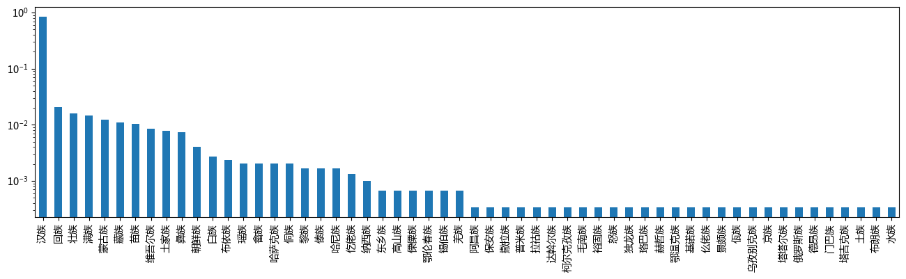
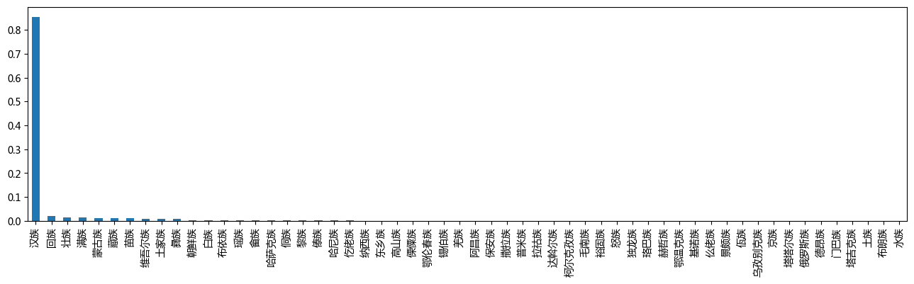
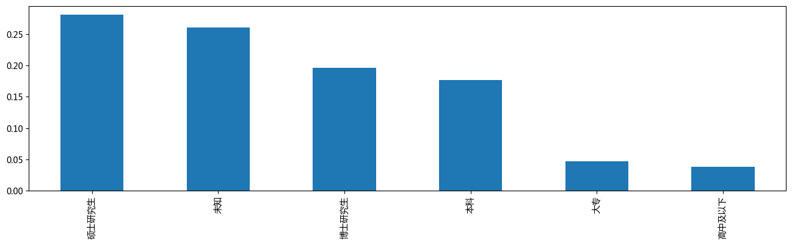

Who runs China？¶
作品链接：https://news.cgtn.com/event/2019/whorunschina/index.html
案例解读 https://github.com/data-journalism/data-journalism.github.io/discussions/48
import pandas as pd
import pylab as plt
plt.rcParams['font.sans-serif'] = ['Microsoft YaHei'] # 用来正常显示中文标签
plt.rcParams['axes.unicode_minus'] = False # 用来正常显示负号, 注意['SimHei']对应这句不行.
df = pd.read_csv('./data/data.js')
df.head()
| var originData = [["Delegation" | Partisan | 党派 | Name | 姓名 | Gender | 性别 | Birth year | Age | Generation | ... | 区域 | Subject Department | 专业分类 | Major | 人文社科拆后专业 | Educational background | 学历 | Ever studied abroad | 海外留学经验] | Unnamed: 25 | |
|---|---|---|---|---|---|---|---|---|---|---|---|---|---|---|---|---|---|---|---|---|---|
| 0 | ["Anhui" | CPC(Communist Party of China) | 中共 | Ding Shiqi | 丁士启 | Male | 男 | 1966.0 | 53.0 | 1960s | ... | 中部 | Natrual Sciences | 自然科学 | Engineering | 工学 | PhD | 博士研究生 | No | 无] | NaN |
| 1 | ["Hunan" | CPC(Communist Party of China) | 中共 | Ding Xiaobing | 丁小兵 | Male | 男 | 1960.0 | 59.0 | 1960s | ... | 西部 | Unknown | 未知 | Unknown | 未知 | Unknown | 未知 | Unknown | 未知] | NaN |
| 2 | ["Shaanxi" | CPC(Communist Party of China) | 中共 | Ding Yunxiang | 丁云祥 | Male | 男 | 1963.0 | 56.0 | 1960s | ... | 西部 | Natrual Sciences | 自然科学 | Engineering | 工学 | PhD | 博士研究生 | No | 无] | NaN |
| 3 | ["Fujian" | No party affiliation | 无 | Ding Shizhong | 丁世忠 | Male | 男 | 1970.0 | 49.0 | 1970s | ... | 东部 | Humanities and Social Sciences | 社会科学 | Management Science | 管理学 | Bachelor | 本科 | No | 无] | NaN |
| 4 | ["Zhejiang" | Chinese Peasants and Workers Democratic Party | 农工党 | Ding Lieming | 丁列明 | Male | 男 | 1963.0 | 56.0 | 1960s | ... | 东部 | Natrual Sciences | 自然科学 | Medical Science | 医学 | PhD | 博士研究生 | Yes | 有] | NaN |
5 rows × 26 columns
len(df)
2976
df.columns
Index(['var originData = [["Delegation"', 'Partisan', '党派', 'Name', '姓名',
'Gender', '性别', 'Birth year', 'Age', 'Generation', '年代', 'Ethnicity',
'民族', 'Birthplace', '籍贯', 'Region', '区域', 'Subject Department', '专业分类',
'Major', '人文社科拆后专业', 'Educational background', '学历',
'Ever studied abroad', '海外留学经验]', 'Unnamed: 25'],
dtype='object')
问题的提出¶
使用这些变量，可以提出哪些问题？
描述性分析¶
df.groupby('党派').mean()
| Birth year | Age | Unnamed: 25 | |
|---|---|---|---|
| 党派 | |||
| 中共 | 1964.739411 | 54.260589 | NaN |
| 中国民主促进会 | 1963.814815 | 55.185185 | NaN |
| 九三学社 | 1965.562500 | 53.437500 | NaN |
| 农工党 | 1963.981481 | 55.018519 | NaN |
| 台盟 | 1965.909091 | 53.090909 | NaN |
| 无 | 1968.543735 | 50.456265 | NaN |
| 民主同盟 | 1964.327586 | 54.672414 | NaN |
| 民主建国会 | 1963.789474 | 55.210526 | NaN |
| 民革 | 1963.636364 | 55.363636 | NaN |
| 致公党 | 1964.947368 | 54.052632 | NaN |
df['党派'].value_counts()
中共 2172
无 423
九三学社 64
民主同盟 58
民主建国会 57
中国民主促进会 54
农工党 54
民革 44
致公党 38
台盟 11
Name: 党派, dtype: int64
df["党派"].value_counts(normalize = True)
中共 0.730084
无 0.142185
九三学社 0.021513
民主同盟 0.019496
民主建国会 0.019160
中国民主促进会 0.018151
农工党 0.018151
民革 0.014790
致公党 0.012773
台盟 0.003697
Name: 党派, dtype: float64
df["性别"].value_counts(normalize = True)
男 0.750588
女 0.249412
Name: 性别, dtype: float64
Pandas Plot
https://pandas.pydata.org/docs/reference/api/pandas.DataFrame.plot.html
plt.figure(figsize =(16, 4), dpi = 100)
df["民族"].value_counts(normalize = True).plot(kind = 'bar')
plt.yscale('log');

plt.figure(figsize =(16, 4), dpi = 100)
plt.rcParams['font.sans-serif'] = ['Microsoft YaHei'] # 用来正常显示中文标签
plt.rcParams['axes.unicode_minus'] = False # 用来正常显示负号, 注意['SimHei']对应这句不行.
df["民族"].value_counts(normalize = True).plot(kind = 'bar');
#plt.yscale('log');

plt.style.use('seaborn')
plt.rcParams['font.sans-serif'] = ['SimHei'] # 用来正常显示中文标签
plt.rcParams['axes.unicode_minus'] = False # 用来正常显示负号
plt.figure(figsize =(4, 4))
df["性别"].value_counts(normalize = True).plot(kind = 'barh');

plt.figure(figsize =(16, 4))
df["Birth year"].value_counts(normalize = True).plot(kind = 'bar');

plt.figure(figsize =(16, 4))
df["Generation"].value_counts(normalize = True).plot(kind = 'bar');

plt.figure(figsize =(16, 4), dpi = 100)
df["籍贯"].value_counts(normalize = True).plot(kind = 'bar');

plt.figure(figsize =(16, 4), dpi = 100)
df["区域"].value_counts(normalize = True).plot(kind = 'bar');

plt.figure(figsize =(16, 4), dpi = 100)
df["专业分类"].value_counts(normalize = True).plot(kind = 'bar');

plt.figure(figsize =(16, 4), dpi = 100)
df["人文社科拆后专业"].value_counts(normalize = True).plot(kind = 'bar');

df["人文社科拆后专业"].value_counts().sum()
2975
len(df)
2976
plt.figure(figsize =(16, 4), dpi = 100)
df["学历"].value_counts(normalize = True).plot(kind = 'bar');

df["海外留学经验"] = [ str(i).replace(']', '') for i in df["海外留学经验]"].tolist() ]
df["海外留学经验"]
plt.figure(figsize =(16, 4), dpi = 100)
df["海外留学经验"].value_counts(normalize = True).plot(kind = 'bar');

列联表分析¶
pd.crosstab(df['性别'],df['学历'],margins=True)
| 学历 | 博士研究生 | 大专 | 未知 | 本科 | 硕士研究生 | 高中及以下 | All |
|---|---|---|---|---|---|---|---|
| 性别 | |||||||
| 女 | 94 | 60 | 270 | 138 | 129 | 51 | 742 |
| 男 | 490 | 78 | 507 | 388 | 707 | 63 | 2233 |
| All | 584 | 138 | 777 | 526 | 836 | 114 | 2975 |
pd.crosstab(df['性别'],df['学历'],margins=True, normalize='index')
| 学历 | 博士研究生 | 大专 | 未知 | 本科 | 硕士研究生 | 高中及以下 |
|---|---|---|---|---|---|---|
| 性别 | ||||||
| 女 | 0.126685 | 0.080863 | 0.363881 | 0.185984 | 0.173854 | 0.068733 |
| 男 | 0.219436 | 0.034931 | 0.227049 | 0.173757 | 0.316614 | 0.028213 |
| All | 0.196303 | 0.046387 | 0.261176 | 0.176807 | 0.281008 | 0.038319 |
94/742
0.12668463611859837
import numpy as np
from scipy import stats
alist = np.array(pd.crosstab(df['性别'],df['学历'],margins=True)).tolist()
alist
[[94, 60, 270, 138, 129, 51, 742],
[490, 78, 507, 388, 707, 63, 2233],
[584, 138, 777, 526, 836, 114, 2975]]
# 卡方检验
chi2, p, ddof, expected = stats.chi2_contingency( alist )
msg = "Test Statistic: {}\n p-value: {}\n Degrees of Freedom: {}\n"
print( msg.format( chi2, p, ddof ) )
print( expected )
Test Statistic: 154.38952044307908
p-value: 7.28076449137039e-27
Degrees of Freedom: 12
[[ 145.65647059 34.41882353 193.79294118 131.19058824 208.50823529
28.43294118 742. ]
[ 438.34352941 103.58117647 583.20705882 394.80941176 627.49176471
85.56705882 2233. ]
[ 584. 138. 777. 526. 836.
114. 2975. ]]
pd.crosstab(df['性别'],df['专业分类'],margins=True, normalize='index')
| 专业分类 | 未知 | 社会科学 | 自然科学 |
|---|---|---|---|
| 性别 | |||
| 女 | 0.529650 | 0.277628 | 0.192722 |
| 男 | 0.360502 | 0.429915 | 0.209584 |
| All | 0.402689 | 0.391933 | 0.205378 |
print(*df['姓名'].tolist())
丁士启 丁小兵 丁云祥 丁世忠 丁列明 丁光宏 丁仲礼 丁来杭 丁宏锁 丁纯 丁国林 丁明 丁烈云 丁绣峰 丁照民 丁福浩 丁薛祥 丁巍 乃依木·亚森 刀晓勤 于飞 于天敏 于中赤 于丕涛 于立新 于伟国 于会文 于旭波 于安玲 于志刚 于志坚 于秀明 于忠福 于金明 于金镒 于泳 于晓明 于峰 于海田 于跃敏 于清明 于集华 于普松 于巍 才华 万卫星 万连步 万勇 万鄂湘 万新恒 乞国艳 卫小春 卫华 卫岗 卫彦明 习近平 习朝峰 马一德 马乙四夫 马卫光 马天龙 马少斌 马化彬 马化腾 马文芳 马玉山 马玉红 马玉璞 马玉霞 马正山 马世忠 马叶江 马兰 马汉成 马永平 马加友 马百龄 马伟明 马传先 马传凯 马华 马旭 马兴瑞 马志武 马利民 马杰 马和帕丽 马波 马学军 马宝平 马空 马春雨 马荣荣 马秋林 马顺南 马恒燕 马晓红 马晖玲 马豹子 马逢国 马银萍 马清辉 马善祥 马瑞燕 马新强 马福昌 马豪辉 马慧娟 丰晓敏 王一宏 王一君 王力 王力威 王士岭 王小万 王小云 王小鸣 王义东 王卫东 王子联 王天目 王天宇 王天琦 王少玄 王少峰 王中立 王水平 王长仁 王长江 王长林 王长河 王凤巧 王凤英 王凤朝 王文全 王文保 王文涛 王方 王予波 王书茂 王玉志 王玉玲 王世琴 王东伟 王东明 王东京 王东峰 王东新 王立 王立山 王立平 王立伟 王立彤 王立科 王立峰 王玄玉 王宁 王宁 王永兰 王吉永 王亚平 王亚东 王再杰 王成 王成男 王光亚 王光远 王刚 王刚 王刚 王刚 王刚 王刚 王廷双 王伟 王伟 王伟 王传霖 王华生 王全 王全兴 王全理 王兆 王冰 王江 王江滨 王守聪 王安忆 王安兰 王军 王军 王红军 王红星 王寿平 王进喜 王远鹤 王孝巧 王志民 王芳 王杜娟 王丽 王连灵 王连春 王连增 王岐山 王岚 王利平 王秀兰 王秀峰 王秀峰 王作英 王沪宁 王怀军 王启繁 王拥军 王奋彦 王尚典 王国生 王国新 王明孝 王忠林 王欣会 王金书 王金行 王金会 王金南 王波 王波 王波 王学成 王学斌 王宝华 王诚 王建伟 王建宇 王建军 王建军 王建国 王建清 王绍南 王玲 王玲娜 王树 王树华 王树江 王树芬 王树国 王威东 王砚蒙 王贻芳 王钦峰 王秋实 王秋玲 王复兴 王修林 王保存 王俊峰 王俊祥 王俊飚 王胜 王胜明 王庭聪 王洪尧 王洪海 王洪祥 王宪魁 王祖伟 王娜 王勇 王勇 王勇超 王耕捷 王艳 王艳凤 王艳清 王秦 王振国 王莉 王晋 王桂波 王晓东 王晓红 王晓洁 王晓菲 王晓梅 王晓霞 王峰 王健 王爱和 王玺玉 王凌 王涛 王涛 王海 王海斗 王海龙 王润 王润梅 王悦 王家胜 王家娟 王家骐 王容川 王娟 王娟玲 王能干 王绣 王教成 王培 王萌萌 王雪梅 王常松 王晨 王曼利 王跃飞 王铮 王银良 王银香 王敏刚 王随莲 王维峰 王瑛 王超 王超英 王喜良 王朝阳 王雁 王雁飞 王雅丽 王辉山 王辉青 王辉忠 王景武 王赋 王强众 王登喜 王瑞军 王瑞霞 王填 王献军 王筱虹 王新伟 王新杰 王新春 王滨梅 王静成 王嘉鹏 王翠凤 王德佳 王毅 王毅 王霞 王麒 王馨 王巍 王巍 王巍 元茂荣 韦年洲 韦庆兰 韦红梅 韦波 韦祖英 韦振益 韦朝晖 韦韬 扎西多杰 扎西江村 木合亚提·加尔木哈买提 木沙·买买提 木沙江·努尔墩 支月英 支艳茹 尤立增 尤权 尤良英 尤猛军 车秀兰 车耶 车俊 车轼 车捷 牙生·司地克 戈明 牛三平 牛书成 牛宝伟 牛朝诗 毛伟明 毛宗福 毛珍芳 毛超峰 仁青东珠 仇冰玉 丹珠昂奔 乌日图 文广 文正友 文冬 文爱华 亢德芝 方中华 方兰 方同华 方向 方红卫 方运舟 方志宏 方利旭 方金华 方建平 方复全 方剑乔 方敏 方敏 方燕 尹力 尹中卿 尹东 尹立云 尹同跃 尹兆林 尹学群 尹德健 孔凡群 孔发龙 孔庆菊 孔军 孔昌生 孔怡 孔晓宏 孔晓艳 孔涛 巴音朝鲁 邓力平 邓大玉 邓小刚 邓向阳 邓进秀 邓丽 邓秀新 邓沛然 邓凯 邓泽永 邓修明 邓振龙 邓桂芳 双少敏 玉龙 甘华田 甘荣坤 甘楚林 艾力更·依明巴海 艾克拜尔·麦提那斯尔 古小玉 古清月 左中一 左文学 左香云 左俊 厉延明 厉莉 石玉东 石光银 石丽平 石时态 石迎军 石建辉 石香元 石泰峰 石晓 石淑兰 石蓉 石嘉兴 石聚彬 石慧芬 布小林 龙正才 龙庄伟 龙晓华 龙翔 龙献文 卢天锡 卢玉胜 卢平 卢庆国 卢克平 卢林 卢凌保 卢瑞安 卢献匾 卢馨 旦正草 叶牛平 叶仁荪 叶双瑜 叶尔江·朱安汗 叶壮 叶青 叶国谦 叶诗文 叶梅芬 叶新华 叶赞平 叶露中 甲登·洛绒向巴 申纪兰 田云鹏 田北辰 田立坤 田永东 田永君 田成 田红旗 田克恭 田纯刚 田忠良 田学峰 田春艳 田树槐 田浩荣 史大刚 史文清 史玉东 史立军 史伟云 史秉锐 史贵禄 史浩飞 史耀斌 冉慧 丘海 付宁 付红玲 付贤智 付国强 代喜院 仪爱文 白文奇 白加扎西 白亚琴 白玛赤林 白春礼 白映玉 白雪峰 白鹤祥 丛斌 印萍 包信和 邝美云 冯丹 冯玉宝 冯玉萍 冯玉臻 冯乐平 冯帆 冯冰 冯军 冯丽朝 冯玮 冯忠华 冯艳丽 冯艳玲 冯海燕 冯鸿昌 冯淑玲 冯琪雅 冯敬坤 冯键 冯毅 冯毅 冯燕 闪亚彬 兰平勇 兰念瑛 兰建勇 兰政 兰燕 兰臻 宁启水 宁建华 宁钢 宁凌 宁雅秋 司留启 司富春 尼牙孜·阿西木 边专 圣辉 邢利民 邢青松 邢京龙 邢界红 戎贵卿 吉克石乌 吉狄马加 吉明东 吉炳轩 吉桂凤 巩建丽 巩保雄 朴松烈 权太琦 成新湘 尧德中 毕生忠 毕宏生 吕文艳 吕卉 吕世明 吕志成 吕妙霞 吕金虎 吕建 吕建中 吕春祥 吕亮功 吕彩霞 吕惊雷 吕薇 则悟 朱小坤 朱玉 朱正友 朱世宏 朱叶玉如 朱立锋 朱芝松 朱有勇 朱列玉 朱伟 朱华荣 朱兆云 朱纪 朱苏荣 朱国萍 朱明春 朱明跃 朱诚 朱建弟 朱是西 朱虹 朱洪武 朱桂艳 朱晓东 朱海仑 朱读稳 朱焕然 朱朝治 朱惠英 朱晶 朱程 朱富海 朱婷 朱登云 朱献福 朱静芝 朱鹤新 乔进双梅 乔秋生 乔彬 伍辉 伍新滨 任千里 任正晓 任贤良 任鸣 任建华 任晓春 华金良 华茜 华树成 华晓丽 伊彤 向巧 向伟艺 向晓波 邬成香 庄文忠 庄光明 庄建 庄炳坤 庄艳 庄毓敏 庄稼汉 刘入源 刘小平 刘小权 刘小兵 刘小燕 刘广河 刘飞香 刘云志 刘艺良 刘日明 刘长龙 刘化文 刘文玲 刘文新 刘予强 刘玉亭 刘正 刘石磊 刘平 刘生荣 刘汉元 刘汉如 刘宁 刘永刚 刘永坚 刘加军 刘发英 刘亚声 刘光萍 刘光斌 刘廷 刘廷安 刘伟 刘伟 刘伟修 刘华 刘自明 刘会成 刘旭 刘旭光 刘多 刘庆民 刘庆峰 刘江东 刘兴云 刘守民 刘军 刘远 刘远坤 刘志仁 刘志让 刘志华 刘志宏 刘芳震 刘丽 刘丽芬 刘丽岩 刘秀云 刘作明 刘希娅 刘怀平 刘宏 刘宏武 刘宏艳 刘宏新 刘启俊 刘妍清 刘若鹏 刘英才 刘杰 刘事青 刘奇 刘奇凡 刘非 刘尚进 刘昆 刘国中 刘国荣 刘昌林 刘忠 刘忠军 刘忠斌 刘和生 刘季幸 刘征 刘金接 刘京菊 刘学敏 刘学景 刘学新 刘宝增 刘宛康 刘建明 刘建洋 刘建超 刘绍亮 刘绍喜 刘春良 刘春香 刘政奎 刘革安 刘荣玉 刘贵芳 刘钟俊 刘香莲 刘修文 刘勇军 刘艳 刘振伟 刘振所 刘莲玉 刘莉莉 刘桂平 刘晓云 刘晓静 刘峰 刘健 刘益春 刘海玲 刘海星 刘宽忍 刘家义 刘家奇 刘家国 刘维朝 刘琴 刘超 刘超 刘惠 刘赐贵 刘锋 刘锐 刘粤军 刘谦 刘强 刘献祥 刘锦兰 刘锦秀 刘新华 刘源 刘德伟 刘德培 刘德辉 刘毅 刘鹤 刘璠 刘蕾 刘巍 齐扎拉 齐玉 齐玉祥 齐玫 齐虎广 齐建新 齐家滨 齐嵩宇 次仁措旦 闫大鹏 闫子贝 闫丽娟 闫傲霜 羊毅 关礼 关志鸥 关牧村 米合伦沙·阿不都 米玛国吉 米克拉依·依布拉音 米忠义 米雪梅 江小涓 江天亮 江必新 江吉村 江寿林 江勇 池建美 汤玉祥 汤亮 安伟 安兆庆 安际衡 安桂武 安康 安然 祁万利 祁春风 许小红 许小英 许仁安 许方盛 许为钢 许立荣 许宁 许宁生 许达哲 许传江 许传智 许仲秋 许州 许安标 许志晖 许利强 许沛 许其亮 许忠发 许虹 许俊 许振超 许继伟 许唯临 许维泽 许锐 许富华 许勤 许雷 许燕妮 农卫红 农宁安 农融 那顺孟和 阮成发 孙大伟 孙丰月 孙丰源 孙开林 孙元华 孙正东 孙丕恕 孙东明 孙永春 孙伟 孙军 孙运锋 孙志平 孙志刚 孙志浩 孙兵 孙其信 孙雨飞 孙国文 孙金龙 孙学龙 孙宝厚 孙建国 孙建国 孙建博 孙春兰 孙春旺 孙树祯 孙轶 孙宪忠 孙艳玲 孙桂泉 孙健 孙涛 孙继业 孙维 孙喆 孙景南 孙斌 孙媛媛 孙登峰 孙新阳 孙飘扬 孙燕 阳卫国 阳海玲 如克亚木·麦提赛地 牟玉昌 买世蕊 买买提明·卡德 买买提明·阿不都艾尼 纪清巨 寿子琪 麦麦提·居马 麦教猛 花蓓 严正 严锋 苏成云 苏伯民 苏荣欢 苏保成 苏海明 苏嘎尔布 杜小光 杜小刚 杜玉波 杜刚 杜延安 杜岗 杜应流 杜彦良 杜美霜 杜振新 杜家毫 杜紫平 杜黎明 杜德印 李士生 李士伟 李士强 李大义 李小兰 李小红 李小莉 李小琴 李久存 李义虎 李卫华 李飞 李飞跃 李丰 李天书 李长青 李长庚 李文辉 李文慧 李为民 李引泉 李书玉 李书福 李玉刚 李玉良 李玉妹 李世平 李东生 李东艳 李占国 李叶红 李生 李兰 李宁 李永生 李永莱 李圣范 李亚平 李亚兰 李亚萍 李亚新 李再勇 李在元 李光宇 李刚 李刚 李先兰 李伟 李伟 李伟 李伟 李延萍 李延强 李全文 李江河 李江南 李军 李红霞 李纪恒 李运田 李孝轩 李志刚 李志强 李克强 李杏玲 李丽华 李丽丽 李连成 李秀林 李秀宝 李秀香 李秀梅 李秀领 李作成 李希 李希信 李希勇 李应生 李沈明 李君 李君豪 李灵 李玮 李坤 李英杰 李林 李杰 李杰云 李郁华 李尚福 李国伟 李国英 李国琴 李国璋 李明 李明伟 李明远 李忠科 李和忠 李秉记 李秉恒 李征 李金东 李金波 李金莲 李炜 李学勇 李学海 李宝忠 李宗胜 李建 李建成 李建安 李建辉 李建强 李建新 李承霞 李绍玉 李春生 李春建 李春奎 李春临 李玲蔚 李荣禧 李树仙 李树林 李树朋 李树建 李树睦 李响 李秋 李秋喜 李俊丰 李彦平 李洪亮 李勇 李勇 李素环 李素萍 李振国 李莉 李晋平 李桂杰 李桂琴 李晓东 李晓林 李峰 李钺锋 李铁 李爱青 李留法 李涛 李海涛 李海燕 李海鹰 李宽端 李家俊 李家洋 李祥斌 李培林 李彬 李梅 李雪芹 李彪 李崇 李彩云 李康 李清泉 李鸿 李鸿忠 李鸿彬 李寅 李琪林 李超 李博 李甦雁 李晴 李景玉 李锐 李智 李舒强 李道明 李湘平 李强 李强 李登海 李勤 李楠楠 李锦斌 李群 李殿勋 李静 李静 李静海 李翠枝 李燕 李薇 李飚 李潞 李霞 李曙光 李巍 杨万明 杨小天 杨小平 杨飞飞 杨飞云 杨元庆 杨元忠 杨长亚 杨玉华 杨玉经 杨永英 杨扬 杨成熙 杨光 杨帆 杨先农 杨伟 杨伟军 杨伟坤 杨华 杨自力 杨兴平 杨军 杨军 杨志今 杨芳 杨克宁 杨克勤 杨丽霞 杨来法 杨初格西 杨茂荣 杨林 杨林花 杨松 杨杰 杨杰 杨尚真 杨国占 杨昌芹 杨明芳 杨忠林 杨征 杨金龙 杨庚豹 杨学明 杨宝玲 杨宗仁 杨诚 杨祉刚 杨建德 杨春雷 杨帮武 杨珍 杨树安 杨临萍 杨贵平 杨俊 杨剑宇 杨洁篪 杨洪波 杨恒俊 杨艳 杨振武 杨莲英 杨莉 杨莹 杨晓雪 杨晓渡 杨倩 杨健 杨海蓉 杨悦 杨祥国 杨彬 杨雪梅 杨绪松 杨维俊 杨琴 杨晶 杨景海 杨铿 杨斌 杨善林 杨善竑 杨勤荣 杨蓉 杨照辉 杨磊 杨震 杨震 杨震生 杨德芹 杨懿文 吾尔尼沙·卡得尔 来鹤 步正合 肖又香 肖开提·依明 肖友才 肖冬松 肖伟 肖利平 肖怀远 肖胜方 肖捷 肖盛峰 肖黎春 时清霜 吴小丽 吴小怡 吴元全 吴云波 吴友胜 吴少华 吴月 吴玉才 吴玉良 吴玉莲 吴立新 吴永利 吴永亮 吴存荣 吴列进 吴光辉 吴刚 吴仰东 吴向东 吴旭 吴兴丰 吴远大 吴社洲 吴英 吴英杰 吴杰明 吴国平 吴国华 吴昌洁 吴明兰 吴金水 吴金笔 吴京耕 吴炜 吴春利 吴政隆 吴相君 吴秋北 吴胜华 吴亮星 吴彦㛃 吴洁秋 吴洪英 吴恒 吴艳良 吴素芳 吴桂华 吴晓东 吴健 吴浩 吴海波 吴海涛 吴娟 吴继发 吴梅芳 吴晨 吴偕林 吴清平 吴惜伟 吴惠芳 吴翔 吴普特 吴颖霞 吴群刚 吴端华 里赞 别必亮 邱水平 邱月潮 邱立成 邱亚夫 邱光和 邱江 邱丽新 邱勇 何大春 何卫东 何仁学 何平 何兰田 何光亮 何红 何宏军 何良军 何金英 何金碧 何学彬 何树平 何星亮 何桂芳 何健忠 何菲 何雪卿 何敏 何琳 何雷 何新 何福胜 何毅亭 佘才高 佘丹青 余小勤 余少华 余功斌 余东 余必丽 余红艺 余红胜 余孝忠 余绍容 余海龙 余彬 余梅 余雪琴 余维祥 余瑞玉 谷凤杰 邹升廷 邹文辉 邹宁 邹自景 邹振球 邹晓东 邹彬 邹瑾 库尔玛什·斯尔江 库尔班·尼亚孜 应勇 冷友斌 冷志义 冷溶 辛崇东 辛琰 辛毅 闵晓青 汪中山 汪其德 汪泉 汪洋 汪海江 汪康 汪鸿雁 沙子呷 沙沨 沙宝琴 沈仁芳 沈方勇 沈志强 沈昌健 沈岩 沈金龙 沈金强 沈春耀 沈泉 沈艳芬 沈素琍 沈晓明 沈铁梅 沈彪 沈跃跃 沈满洪 沈德法 沈禧娜 宋丰年 宋元俊 宋水仙 宋丹 宋文新 宋尔卫 宋亚平 宋庆礼 宋关昶 宋军继 宋远方 宋宏伟 宋张骏 宋虎振 宋波 宋学 宋宝安 宋春雳 宋勇 宋琨 宋善玉 宋普选 宋殿宇 宋静 初建美 张又侠 张工 张小平 张小燕 张凡华 张广营 张广敏 张义瑚 张之政 张卫国 张子林 张天任 张天培 张少琴 张升民 张凤英 张文仁 张文堂 张文喜 张为人 张玉珍 张世方 张本才 张术平 张平 张平 张东河 张业 张业遂 张叶飞 张甲天 张冬云 张立军 张立祥 张礼斌 张永利 张永明 张永霞 张成中 张光荣 张伟 张传卫 张延明 张全收 张兆安 张庆伟 张汝财 张兴海 张守攻 张军 张军 张红伟 张孝成 张志军 张志良 张志勇 张志祥 张苏军 张丽 张丽侠 张丽晓 张来辉 张轩 张利民 张秀兰 张兵 张伯礼 张伯军 张近东 张彤 张灼华 张沁荣 张宏妹 张宏祥 张武宗 张青彬 张林顺 张杰 张雨浦 张国芬 张国清 张国新 张明珠 张咏梅 张岩松 张金华 张金涛 张金海 张治芬 张学宇 张学武 张学政 张学锋 张学群 张宝艳 张建东 张建民 张建伟 张建华 张建国 张建超 张建慧 张承祖 张绍勇 张春生 张春贤 张珂 张挺 张荣 张荣珍 张荣顺 张柏青 张柏楠 张俊勇 张洪英 张洪贺 张宪省 张勇 张耕 张艳 张莉 张莉 张桂玉 张桂平 张桂芹 张烈英 张晓 张晓东 张晓北 张晓庆 张晓兵 张晓明 张晓容 张健 张爱军 张益俊 张海军 张海英 张海波 张海波 张海涛 张涤 张家文 张家胜 张家祥 张通 张继新 张梦雪 张硕辅 张常宁 张常荣 张清海 张鸿星 张淑芬 张淑琴 张婧婧 张维宁 张琳 张敬华 张惠 张雁 张雄 张雄伟 张辉 张景辉 张锐 张智龙 张智军 张智富 张集智 张斌 张道衡 张富民 张瑞书 张雷 张雷明 张锦岚 张锦林 张新 张新文 张静 张潇 张慧 张慧 张磊 张箭 张德华 张德芹 张毅 张璐 张骥翼 陆文俊 陆东福 陆永泉 陆永耀 陆亚萍 陆弟敏 陆昊 陆波 陆俊华 陆胜祥 陆爱益 陆銮眉 阿不都克里木·哈里克 阿不都热克甫·吐木尼牙孜 阿东 阿生青 阿达来提·艾再孜 阿来 阿迪力·阿不都热扎克 陈乃科 陈力 陈广浩 陈义龙 陈卫东 陈飞 陈云英 陈少波 陈少荣 陈凤珍 陈凤翔 陈文华 陈文浩 陈文琴 陈平 陈平华 陈东辉 陈立 陈立人 陈训华 陈吉宁 陈吉明 陈光志 陈刚 陈先志 陈仲南 陈华 陈华元 陈向群 陈全国 陈旭斌 陈冰冰 陈军 陈如桂 陈求发 陈丽芬 陈秀艳 陈佐东 陈希 陈亨利 陈良 陈张铭 陈玮 陈武 陈坤 陈林 陈杰 陈述涛 陈国民 陈国桢 陈国鹰 陈鸣波 陈竺 陈金山 陈宗年 陈建华 陈建华 陈建军 陈建银 陈春平 陈春芳 陈树波 陈虹 陈香美 陈科含 陈保华 陈保善 陈俊林 陈剑飞 陈亮 陈炳艳 陈勇 陈勇 陈勇 陈勇彪 陈振亮 陈振彬 陈晋 陈晏 陈恩明 陈健 陈爱珠 陈爱莲 陈海仪 陈润儿 陈家东 陈家静 陈朗 陈继壮 陈雪礼 陈雪萍 陈曼琪 陈敏尔 陈康平 陈隆梅 陈琳 陈斯喜 陈紫萱 陈晶莹 陈智思 陈道祥 陈温福 陈瑞爱 陈蒙蒙 陈辐宽 陈锡文 陈锦石 陈颖宇 陈靖 陈新有 陈新武 陈雍 陈源 陈福利 陈静 陈静瑜 陈豪 陈飘 陈震宁 陈黎明 陈澄 陈燎原 陈赣飞 陈鑫 姒健敏 努尔·买买提 邵长金 邵志清 邵志豪 邵利民 邵俊杰 武卫东 武文 武文飞 武仲良 武志永 武宏文 武怡 武涛 武维华 拉齐尼·巴依卡 拉玛·兴高 招启柏 苗华 苗秀 苗振林 苗润奇 苻彩香 苟兴龙 苑广睿 范中杰 范冬云 范永贞 范秉衡 范波 范承才 范骁骏 范锐平 范照兵 范鹏 林天干 林少春 林少群 林水栖 林文勋 林文雄 林文耀 林龙安 林印孙 林永忠 林华忠 林兴禄 林武 林青 林建华 林贻影 林顺潮 林冠 林勇 林铎 林笑云 林彬杨 林腾蛟 林毅 杭迎伟 奇巴图 欧阳华 欧阳武 欧阳昌琼 欧阳赏莲 欧阳黔森 欧其 郅慧 卓长立 卓新平 卓嘎 尚伦生 尚金锁 尚朝阳 尚瑞芬 旺堆 杲云 果果 明生 明海 易炼红 易家祥 易捷 迪力夏提·柯德尔汗 呼和巴特尔 罗小云 罗卫红 罗平 罗东川 罗亚中 罗红江 罗来昌 罗应和 罗良娟 罗阿英 罗杰 罗佳明 罗金仁 罗建国 罗保铭 罗俊 罗胜联 罗艳 罗振 罗珺 罗萍 罗朝阳 罗朝运 罗强 罗强 罗鹏 罗毅 罗霞 罗瀛 帕尔哈提·肉孜 凯赛尔·阿不都克热木 图门 和段琪 岳国君 岳喜环 金不换 金东浩 金汝彬 金红光 金寿浩 金进尧 金京哲 金振吉 金葆康 金雄 金晶 金锋 郄英才 周义哲 周卫健 周丰林 周云杰 周少政 周文对 周文涛 周文霞 周玉 周立云 周立成 周汉生 周弘 周亚宁 周光权 周仲荣 周旭勇 周异决 周红波 周吴刚 周松和 周松勃 周忠莲 周建军 周建军 周建波 周绍军 周玲慧 周厚健 周炼 周洪江 周洪宇 周勇 周素明 周振海 周晓强 周铁根 周健 周海波 周萌 周崇臣 周敏 周清和 周淑英 周善红 周强 周新民 周福庚 周慧 周德睿 周潮洪 周燕芳 庞永辉 庞丽娟 庞国明 庞辉 郑卫平 郑艺 郑月明 郑玉晓 郑功成 郑亚莉 郑光照 郑传玖 郑向东 郑军里 郑连生 郑坚江 郑杰 郑建英 郑建新 郑奎城 郑秋林 郑俊杰 郑剑戈 郑晓幸 郑浩 郑家建 郑彩琴 郑淑娜 郑喜兰 郑葵阳 郑裕财 郑耀棠 单晓明 法蒂玛 泽仁永宗 宝林 宗永祥 宗国英 官启军 郎友良 郎奎平 房灵敏 屈胜 孟凡利 孟中康 孟平红 孟庆海 孟庆强 孟和 孟建民 孟宪东 孟海 降巴克珠 降初 线晓云 项雪龙 赵大春 赵云柱 赵文龙 赵玉秀 赵龙虎 赵平 赵乐际 赵乐韬 赵冬苓 赵立欣 赵永平 赵伟 赵会杰 赵江涛 赵克志 赵应云 赵启三 赵郁 赵国祥 赵明枝 赵明翠 赵岩泉 赵季平 赵金龙 赵治海 赵宗岐 赵建社 赵春雷 赵昭 赵思学 赵俊民 赵宪庚 赵贺 赵勇 赵素萍 赵晓燕 赵峰 赵爱军 赵剡水 赵萍 赵彪 赵铭 赵鸿涛 赵超 赵辉 赵皖平 赵瑞宝 赵锡伟 赵静 赵豪志 郝世玲 郝旭 郝芳 郝茂荣 郝明金 郝春荣 郝俊海 荣久华 胡五岳 胡五清 胡少先 胡中辉 胡为义 胡玉亭 胡可明 胡亚枫 胡成中 胡伟林 胡江 胡冶 胡启生 胡阿罗 胡昌明 胡明春 胡和平 胡季强 胡建文 胡春华 胡春莲 胡春霞 胡荃 胡胜云 胡胜宝 胡美娥 胡贺波 胡桂花 胡晓明 胡海峰 胡梅英 胡道才 胡强 柯云峰 柯军 柯建华 查玉春 查艳 柳红 柳磊 咸顺女 咸辉 战厚顺 哈尼巴提·沙布开 哈明江 钟志明 钟绍军 钟海燕 钮新强 郜秀菊 种衍民 段文泉 段宇飞 段春华 段俊 修长智 信春鹰 皇甫立同 禹诚 侯二河 侯云 侯华梅 侯军 侯学元 侯建军 侯胜亮 侯艳梅 侯清国 侯湛莹 侯蓉 侯漫路 俞学文 俞章法 昝圣达 昝林森 饶开勋 饶文霖 施克辉 施家伦 姜卫东 姜四清 姜有为 姜成英 姜希猛 姜国平 姜明 姜建军 姜建萍 姜勇 姜涛 娄勤俭 洪为民 洪杰 洪波 洛桑江村 宫明杰 宫鸣 宫蒲光 祖木热提·吾布力 祝雪兰 祝淑钗 费少云 费东斌 姚劲波 姚武江 姚忠良 姚建年 姚顺武 姚奕生 姚祖辉 姚鹃 娜仁图雅 贺一诚 贺光玉 贺泓 贺荣 贺恒扬 贺懋燮 骆惠宁 秦飞 秦玉峰 秦生祥 秦光蔚 秦玥飞 秦英林 秦和 秦春成 秦顺全 秦爱玲 班华忠 班宇侠 班忠柏 袁友方 袁玉宇 袁伟霞 袁延文 袁红梅 袁远 袁志敏 袁昌选 袁周 袁建良 袁驷 袁政海 袁俊洲 袁亮 袁桐利 袁海波 袁家军 袁晶 袁斌 袁誉柏 热依扎·巴合道列提 耿学梅 耿新翠 耿福能 耿遵珠 聂永平 聂鹏举 莫小峰 莫元花 莫华福 莫俊鹏 莫恭明 莫照兰 格桑卓嘎 格桑德吉 索朗扎西 索曙辉 栗生锐 栗战书 栗翠田 贾大风 贾文勤 贾平凹 贾尔恒·阿哈提 贾廷安 贾宇 贾红涛 贾君 贾建成 贾俊明 贾润安 贾樟柯 夏文勇 夏永祥 夏伟东 夏兆纪 夏红民 夏吾卓玛 夏林茂 夏恒建 夏道虎 顾军 顾晋 顾祥兵 顾雪飞 顾想平 柴闪闪 柴会恩 柴绍良 党永富 党晓龙 党增龙 晏婉萍 钱三雄 钱万成 钱加艳 钱凯法 钱春阳 钱树民 钱铭 倪海琼 徐一平 徐元 徐云波 徐云鹏 徐文光 徐立平 徐立毅 徐西盛 徐光 徐延豪 徐华铮 徐华勤 徐向华 徐衣显 徐兴林 徐宇宁 徐如俊 徐玖平 徐远冰 徐佐 徐启方 徐贤淑 徐国权 徐征 徐建华 徐建贤 徐建国 徐建锋 徐绍史 徐珏慧 徐显明 徐科 徐济超 徐恒秋 徐冠巨 徐艳茹 徐起零 徐莹 徐晓 徐颂 徐留平 徐郭平 徐涛 徐诺金 徐萍 徐淙祥 徐辉 徐锦庚 徐滔 徐德全 徐镜人 殷一璀 殷方龙 殷红梅 殷昭举 殷勇 殷焕明 殷鲁谦 翁一岚 翁丽芬 翁杰明 翁国星 翁孟勇 凌云 凌屹 凌希 凌焕新 高卫东 高子程 高开贤 高友东 高玉葆 高世宏 高丙伟 高东垒 高永 高伟 高向秋 高红卫 高苏娟 高步明 高阿莉 高虎城 高明芹 高岩 高岭 高波 高建民 高建军 高春艳 高莉 高桂英 高钰 高祥明 高继明 高琛 高道权 高颖明 高新才 高毅进 高憬宏 郭乃硕 郭大进 郭小芹 郭凤莲 郭以录 郭玉芬 郭永红 郭永宏 郭达文 郭成宇 郭庆平 郭安 郭军 郭红静 郭红旗 郭进 郭声琨 郭迎光 郭亨孝 郭汶霞 郭玫 郭凯 郭金才 郭建仁 郭建华 郭建英 郭建增 郭洪泉 郭姣 郭艳玲 郭素萍 郭振华 郭晓东 郭晓红 郭晓燕 郭爱玲 郭浩 郭晶晶 郭锋 郭锐 郭普校 郭雷 郭锡文 郭新明 席文 席真 唐一军 唐川平 唐仁健 唐永博 唐廷波 唐农 唐良智 唐纯玉 唐岳 唐金海 唐晓明 唐海龙 唐登杰 唐锦波 唐慧娟 唐燕 涂冬 涂伟明 容永恩 谈民强 谈绪祥 陶光辉 陶治国 陶春 陶勋花 黄小军 黄小玲 黄久生 黄友嘉 黄文生 黄玉山 黄玉林 黄玉梅 黄世勇 黄龙云 黄东兵 黄业斌 黄立军 黄汉标 黄礼辉 黄达昌 黄庆学 黄志贤 黄花春 黄克超 黄连珍 黄利婷 黄坤明 黄茂兴 黄迪南 黄河 黄波 黄定承 黄建平 黄细花 黄春燕 黄政仁 黄贵松 黄俐波 黄美媚 黄炳峰 黄炳章 黄艳 黄晓渝 黄爱民 黄海龙 黄海昆 黄海桥 黄菊花 黄铭 黄望明 黄超 黄强 黄楚平 黄路生 黄毅 黄蕾 黄鑫 萧志伟 梅世文 梅世彤 梅亦 梅花 梅建华 曹仁贤 曹可凡 曹立强 曹永鸣 曹庆华 曹汝涛 曹志强 曹国侯 曹金萍 曹京宜 曹宝华 曹建明 曹清尧 曹鸿鸣 曹新元 曹慧泉 曹燕明 龚正 龚立群 龚明珠 龚定荣 龚建明 龚冠宇 龚稼立 龚曙光 雪克来提·扎克尔 常丽虹 崔久秀 崔玉玲 崔世平 崔永辉 崔兴国 崔建梅 崔荣华 崔贵海 崔洪刚 崔桂亮 崔根良 崔海霞 崔智友 崔瑜 崔鹏 崔巍 银燕 矫勇 符小琴 符之冠 符宇航 符宣朝 庹必光 庹庆明 庹勤慧 康军 康志军 康春元 康晓晖 康涛 鹿心社 鹿新弟 章伟民 章国强 章昌平 章联生 章锋 阎少泉 阎志 阎武 阎建国 阎美蓉 梁庆凯 梁阳 梁志强 梁兵 梁金辉 梁剑涛 梁桂 梁桃 梁倩娟 梁益建 梁维东 梁惠玲 梁稳根 梁黎明 梁德标 寇昉 谌贻琴 喜清江 彭石华 彭传新 彭祁 彭寿 彭际淼 彭勃 彭家瑞 彭措 彭唱英 彭清华 揣小勇 葛会波 葛明华 葛树芹 葛晓燕 葛益平 葛菲 葛道凯 董卫民 董开军 董中原 董文琴 董正宏 董传杰 董林 董明珠 董保同 董晓宇 董晓健 董彩云 敬大力 蒋小松 蒋卫平 蒋立虹 蒋永馨 蒋庆群 蒋宇霞 蒋丽英 蒋卓庆 蒋昌忠 蒋建宇 蒋建新 蒋胜男 蒋超良 蒋漠祥 蒋毓勤 韩卫国 韩正 韩立平 韩立明 韩永文 韩永进 韩再芬 韩库 韩金光 韩荣照 韩树旺 韩显明 韩秋香 韩振东 韩晓东 韩晓武 韩恩厚 韩峰 韩梅 韩鹏 韩福春 韩德云 韩德洋 朝勒孟 覃建宁 覃鸿 粟琼 景汉朝 景俊海 喻春梅 程立峰 程并强 程芳 程坚 程林 程京 程诚 程桔 程恩富 程萍 程梦醒 程鼎 程寒飞 傅自应 傅明先 傅奎 傅信平 傅莹 傅德辉 焦云 焦兰生 焦新安 储小芹 舒庆 舒健 舒婷 番跃平 释身振 鲁培军 鲁曼 童路雯 普布顿珠 普尔巴·图格杰加甫 曾力群 曾小敏 曾云英 曾文明 曾光安 曾庆洪 曾丽 曾范涛 曾香桂 曾娜 曾卿 曾静萍 温秀玲 温枢刚 温国辉 温艳嫦 温娟 温菲 温湛滨 温暖 温锦玲 温鹏程 游弋 游劝荣 富康年 谢广祥 谢正谊 谢生瑞 谢伏瞻 谢志成 谢来发 谢坚 谢国明 谢忠岩 谢金红 谢宝禄 谢建辉 谢经荣 谢贻平 谢津秋 谢勇 谢资清 谢舒雯 谢德体 鄢福初 靳伟 靳灵展 蓝佛安 蓝绍敏 蒲永能 蒲彬彬 楼阳生 裘东耀 赖秀福 甄兰芳 雷冬竹 雷光锋 雷军 雷应敏 雷金玉 雷洪 雷艳 雷健坤 雷添良 雷温芳 雷燕琴 路俊霞 詹文龙 詹国海 鲍文波 鲍守坤 鲍迎祥 解维俊 新甲旦真 雍成瀚 满慎刚 骞芳莉 窦正宝 窦延丽 窦希萍 窦贤康 窦树华 窦晓玉 褚旭亮 褚锦锋 静波 嘉木样·洛桑久美·图丹却吉尼玛 赫捷 蔡卫平 蔡达峰 蔡光洁 蔡仲光 蔡红霞 蔡丽新 蔡奇 蔡昉 蔡学恩 蔡细春 蔡玲 蔡素玉 蔡继明 蔡培辉 蔡毅 裴伟东 裴春亮 管延密 鲜铁可 廖长江 廖仁旺 廖玉英 廖正良 廖成臣 廖华歌 廖国勋 廖昌永 廖建宇 廖贵平 廖虹宇 廖晓军 廖爱莲 廖海鹰 廖朝阳 阚全程 谭本宏 谭平川 谭民 谭成旭 谭先国 谭旭光 谭志源 谭泽勇 谭建兰 谭祖安 谭琳 谭斌 谭德才 谭耀宗 肇颖斌 翟友财 翟京宋 翟清斌 熊永俊 熊建明 熊思东 熊晓冬 熊维政 熊群力 缪中 缪国乐 缪静 樊一平 樊代明 樊会涛 樊庆峰 樊芸 樊丽明 黎火辉 黎世祺 黎立璋 黎志宏 黎霞 滕佳材 滕宝贵 颜宝铃 潘文道 潘向黎 潘丽梅 潘利国 潘佳瑛 潘复生 潘保春 潘美儿 潘桂仙 潘萍 潘雪平 潘越 潘敬东 潘锋 薛玉凤 薛占海 薛江武 薛志国 薛景霞 霍好胜 霍金花 霍晓丽 霍涛 霍敏 霍照良 霍震寰 穆为民 戴天方 戴元湖 戴长冰 戴世宏 戴立忠 戴运龙 戴启远 戴继双 戴雅萍 戴源 鞠秀芹 檀结庆 魏凤和 魏立华 魏后凯 魏志民 魏明 魏金龙 魏学峰 魏春 魏树旺 魏洪义 魏琴 魏德东 魏臻 籍涛 nan
for i in df['姓名']:
print('https://baike.baidu.com/item/'+str(i))
https://baike.baidu.com/item/丁士启
https://baike.baidu.com/item/丁小兵
https://baike.baidu.com/item/丁云祥
https://baike.baidu.com/item/丁世忠
https://baike.baidu.com/item/丁列明
https://baike.baidu.com/item/丁光宏
https://baike.baidu.com/item/丁仲礼
https://baike.baidu.com/item/丁来杭
https://baike.baidu.com/item/丁宏锁
https://baike.baidu.com/item/丁纯
https://baike.baidu.com/item/丁国林
https://baike.baidu.com/item/丁明
https://baike.baidu.com/item/丁烈云
https://baike.baidu.com/item/丁绣峰
https://baike.baidu.com/item/丁照民
https://baike.baidu.com/item/丁福浩
https://baike.baidu.com/item/丁薛祥
https://baike.baidu.com/item/丁巍
https://baike.baidu.com/item/乃依木·亚森
https://baike.baidu.com/item/刀晓勤
https://baike.baidu.com/item/于飞
https://baike.baidu.com/item/于天敏
https://baike.baidu.com/item/于中赤
https://baike.baidu.com/item/于丕涛
https://baike.baidu.com/item/于立新
https://baike.baidu.com/item/于伟国
https://baike.baidu.com/item/于会文
https://baike.baidu.com/item/于旭波
https://baike.baidu.com/item/于安玲
https://baike.baidu.com/item/于志刚
https://baike.baidu.com/item/于志坚
https://baike.baidu.com/item/于秀明
https://baike.baidu.com/item/于忠福
https://baike.baidu.com/item/于金明
https://baike.baidu.com/item/于金镒
https://baike.baidu.com/item/于泳
https://baike.baidu.com/item/于晓明
https://baike.baidu.com/item/于峰
https://baike.baidu.com/item/于海田
https://baike.baidu.com/item/于跃敏
https://baike.baidu.com/item/于清明
https://baike.baidu.com/item/于集华
https://baike.baidu.com/item/于普松
https://baike.baidu.com/item/于巍
https://baike.baidu.com/item/才华
https://baike.baidu.com/item/万卫星
https://baike.baidu.com/item/万连步
https://baike.baidu.com/item/万勇
https://baike.baidu.com/item/万鄂湘
https://baike.baidu.com/item/万新恒
https://baike.baidu.com/item/乞国艳
https://baike.baidu.com/item/卫小春
https://baike.baidu.com/item/卫华
https://baike.baidu.com/item/卫岗
https://baike.baidu.com/item/卫彦明
https://baike.baidu.com/item/习近平
https://baike.baidu.com/item/习朝峰
https://baike.baidu.com/item/马一德
https://baike.baidu.com/item/马乙四夫
https://baike.baidu.com/item/马卫光
https://baike.baidu.com/item/马天龙
https://baike.baidu.com/item/马少斌
https://baike.baidu.com/item/马化彬
https://baike.baidu.com/item/马化腾
https://baike.baidu.com/item/马文芳
https://baike.baidu.com/item/马玉山
https://baike.baidu.com/item/马玉红
https://baike.baidu.com/item/马玉璞
https://baike.baidu.com/item/马玉霞
https://baike.baidu.com/item/马正山
https://baike.baidu.com/item/马世忠
https://baike.baidu.com/item/马叶江
https://baike.baidu.com/item/马兰
https://baike.baidu.com/item/马汉成
https://baike.baidu.com/item/马永平
https://baike.baidu.com/item/马加友
https://baike.baidu.com/item/马百龄
https://baike.baidu.com/item/马伟明
https://baike.baidu.com/item/马传先
https://baike.baidu.com/item/马传凯
https://baike.baidu.com/item/马华
https://baike.baidu.com/item/马旭
https://baike.baidu.com/item/马兴瑞
https://baike.baidu.com/item/马志武
https://baike.baidu.com/item/马利民
https://baike.baidu.com/item/马杰
https://baike.baidu.com/item/马和帕丽
https://baike.baidu.com/item/马波
https://baike.baidu.com/item/马学军
https://baike.baidu.com/item/马宝平
https://baike.baidu.com/item/马空
https://baike.baidu.com/item/马春雨
https://baike.baidu.com/item/马荣荣
https://baike.baidu.com/item/马秋林
https://baike.baidu.com/item/马顺南
https://baike.baidu.com/item/马恒燕
https://baike.baidu.com/item/马晓红
https://baike.baidu.com/item/马晖玲
https://baike.baidu.com/item/马豹子
https://baike.baidu.com/item/马逢国
https://baike.baidu.com/item/马银萍
https://baike.baidu.com/item/马清辉
https://baike.baidu.com/item/马善祥
https://baike.baidu.com/item/马瑞燕
https://baike.baidu.com/item/马新强
https://baike.baidu.com/item/马福昌
https://baike.baidu.com/item/马豪辉
https://baike.baidu.com/item/马慧娟
https://baike.baidu.com/item/丰晓敏
https://baike.baidu.com/item/王一宏
https://baike.baidu.com/item/王一君
https://baike.baidu.com/item/王力
https://baike.baidu.com/item/王力威
https://baike.baidu.com/item/王士岭
https://baike.baidu.com/item/王小万
https://baike.baidu.com/item/王小云
https://baike.baidu.com/item/王小鸣
https://baike.baidu.com/item/王义东
https://baike.baidu.com/item/王卫东
https://baike.baidu.com/item/王子联
https://baike.baidu.com/item/王天目
https://baike.baidu.com/item/王天宇
https://baike.baidu.com/item/王天琦
https://baike.baidu.com/item/王少玄
https://baike.baidu.com/item/王少峰
https://baike.baidu.com/item/王中立
https://baike.baidu.com/item/王水平
https://baike.baidu.com/item/王长仁
https://baike.baidu.com/item/王长江
https://baike.baidu.com/item/王长林
https://baike.baidu.com/item/王长河
https://baike.baidu.com/item/王凤巧
https://baike.baidu.com/item/王凤英
https://baike.baidu.com/item/王凤朝
https://baike.baidu.com/item/王文全
https://baike.baidu.com/item/王文保
https://baike.baidu.com/item/王文涛
https://baike.baidu.com/item/王方
https://baike.baidu.com/item/王予波
https://baike.baidu.com/item/王书茂
https://baike.baidu.com/item/王玉志
https://baike.baidu.com/item/王玉玲
https://baike.baidu.com/item/王世琴
https://baike.baidu.com/item/王东伟
https://baike.baidu.com/item/王东明
https://baike.baidu.com/item/王东京
https://baike.baidu.com/item/王东峰
https://baike.baidu.com/item/王东新
https://baike.baidu.com/item/王立
https://baike.baidu.com/item/王立山
https://baike.baidu.com/item/王立平
https://baike.baidu.com/item/王立伟
https://baike.baidu.com/item/王立彤
https://baike.baidu.com/item/王立科
https://baike.baidu.com/item/王立峰
https://baike.baidu.com/item/王玄玉
https://baike.baidu.com/item/王宁
https://baike.baidu.com/item/王宁
https://baike.baidu.com/item/王永兰
https://baike.baidu.com/item/王吉永
https://baike.baidu.com/item/王亚平
https://baike.baidu.com/item/王亚东
https://baike.baidu.com/item/王再杰
https://baike.baidu.com/item/王成
https://baike.baidu.com/item/王成男
https://baike.baidu.com/item/王光亚
https://baike.baidu.com/item/王光远
https://baike.baidu.com/item/王刚
https://baike.baidu.com/item/王刚
https://baike.baidu.com/item/王刚
https://baike.baidu.com/item/王刚
https://baike.baidu.com/item/王刚
https://baike.baidu.com/item/王刚
https://baike.baidu.com/item/王廷双
https://baike.baidu.com/item/王伟
https://baike.baidu.com/item/王伟
https://baike.baidu.com/item/王伟
https://baike.baidu.com/item/王传霖
https://baike.baidu.com/item/王华生
https://baike.baidu.com/item/王全
https://baike.baidu.com/item/王全兴
https://baike.baidu.com/item/王全理
https://baike.baidu.com/item/王兆
https://baike.baidu.com/item/王冰
https://baike.baidu.com/item/王江
https://baike.baidu.com/item/王江滨
https://baike.baidu.com/item/王守聪
https://baike.baidu.com/item/王安忆
https://baike.baidu.com/item/王安兰
https://baike.baidu.com/item/王军
https://baike.baidu.com/item/王军
https://baike.baidu.com/item/王红军
https://baike.baidu.com/item/王红星
https://baike.baidu.com/item/王寿平
https://baike.baidu.com/item/王进喜
https://baike.baidu.com/item/王远鹤
https://baike.baidu.com/item/王孝巧
https://baike.baidu.com/item/王志民
https://baike.baidu.com/item/王芳
https://baike.baidu.com/item/王杜娟
https://baike.baidu.com/item/王丽
https://baike.baidu.com/item/王连灵
https://baike.baidu.com/item/王连春
https://baike.baidu.com/item/王连增
https://baike.baidu.com/item/王岐山
https://baike.baidu.com/item/王岚
https://baike.baidu.com/item/王利平
https://baike.baidu.com/item/王秀兰
https://baike.baidu.com/item/王秀峰
https://baike.baidu.com/item/王秀峰
https://baike.baidu.com/item/王作英
https://baike.baidu.com/item/王沪宁
https://baike.baidu.com/item/王怀军
https://baike.baidu.com/item/王启繁
https://baike.baidu.com/item/王拥军
https://baike.baidu.com/item/王奋彦
https://baike.baidu.com/item/王尚典
https://baike.baidu.com/item/王国生
https://baike.baidu.com/item/王国新
https://baike.baidu.com/item/王明孝
https://baike.baidu.com/item/王忠林
https://baike.baidu.com/item/王欣会
https://baike.baidu.com/item/王金书
https://baike.baidu.com/item/王金行
https://baike.baidu.com/item/王金会
https://baike.baidu.com/item/王金南
https://baike.baidu.com/item/王波
https://baike.baidu.com/item/王波
https://baike.baidu.com/item/王波
https://baike.baidu.com/item/王学成
https://baike.baidu.com/item/王学斌
https://baike.baidu.com/item/王宝华
https://baike.baidu.com/item/王诚
https://baike.baidu.com/item/王建伟
https://baike.baidu.com/item/王建宇
https://baike.baidu.com/item/王建军
https://baike.baidu.com/item/王建军
https://baike.baidu.com/item/王建国
https://baike.baidu.com/item/王建清
https://baike.baidu.com/item/王绍南
https://baike.baidu.com/item/王玲
https://baike.baidu.com/item/王玲娜
https://baike.baidu.com/item/王树
https://baike.baidu.com/item/王树华
https://baike.baidu.com/item/王树江
https://baike.baidu.com/item/王树芬
https://baike.baidu.com/item/王树国
https://baike.baidu.com/item/王威东
https://baike.baidu.com/item/王砚蒙
https://baike.baidu.com/item/王贻芳
https://baike.baidu.com/item/王钦峰
https://baike.baidu.com/item/王秋实
https://baike.baidu.com/item/王秋玲
https://baike.baidu.com/item/王复兴
https://baike.baidu.com/item/王修林
https://baike.baidu.com/item/王保存
https://baike.baidu.com/item/王俊峰
https://baike.baidu.com/item/王俊祥
https://baike.baidu.com/item/王俊飚
https://baike.baidu.com/item/王胜
https://baike.baidu.com/item/王胜明
https://baike.baidu.com/item/王庭聪
https://baike.baidu.com/item/王洪尧
https://baike.baidu.com/item/王洪海
https://baike.baidu.com/item/王洪祥
https://baike.baidu.com/item/王宪魁
https://baike.baidu.com/item/王祖伟
https://baike.baidu.com/item/王娜
https://baike.baidu.com/item/王勇
https://baike.baidu.com/item/王勇
https://baike.baidu.com/item/王勇超
https://baike.baidu.com/item/王耕捷
https://baike.baidu.com/item/王艳
https://baike.baidu.com/item/王艳凤
https://baike.baidu.com/item/王艳清
https://baike.baidu.com/item/王秦
https://baike.baidu.com/item/王振国
https://baike.baidu.com/item/王莉
https://baike.baidu.com/item/王晋
https://baike.baidu.com/item/王桂波
https://baike.baidu.com/item/王晓东
https://baike.baidu.com/item/王晓红
https://baike.baidu.com/item/王晓洁
https://baike.baidu.com/item/王晓菲
https://baike.baidu.com/item/王晓梅
https://baike.baidu.com/item/王晓霞
https://baike.baidu.com/item/王峰
https://baike.baidu.com/item/王健
https://baike.baidu.com/item/王爱和
https://baike.baidu.com/item/王玺玉
https://baike.baidu.com/item/王凌
https://baike.baidu.com/item/王涛
https://baike.baidu.com/item/王涛
https://baike.baidu.com/item/王海
https://baike.baidu.com/item/王海斗
https://baike.baidu.com/item/王海龙
https://baike.baidu.com/item/王润
https://baike.baidu.com/item/王润梅
https://baike.baidu.com/item/王悦
https://baike.baidu.com/item/王家胜
https://baike.baidu.com/item/王家娟
https://baike.baidu.com/item/王家骐
https://baike.baidu.com/item/王容川
https://baike.baidu.com/item/王娟
https://baike.baidu.com/item/王娟玲
https://baike.baidu.com/item/王能干
https://baike.baidu.com/item/王绣
https://baike.baidu.com/item/王教成
https://baike.baidu.com/item/王培
https://baike.baidu.com/item/王萌萌
https://baike.baidu.com/item/王雪梅
https://baike.baidu.com/item/王常松
https://baike.baidu.com/item/王晨
https://baike.baidu.com/item/王曼利
https://baike.baidu.com/item/王跃飞
https://baike.baidu.com/item/王铮
https://baike.baidu.com/item/王银良
https://baike.baidu.com/item/王银香
https://baike.baidu.com/item/王敏刚
https://baike.baidu.com/item/王随莲
https://baike.baidu.com/item/王维峰
https://baike.baidu.com/item/王瑛
https://baike.baidu.com/item/王超
https://baike.baidu.com/item/王超英
https://baike.baidu.com/item/王喜良
https://baike.baidu.com/item/王朝阳
https://baike.baidu.com/item/王雁
https://baike.baidu.com/item/王雁飞
https://baike.baidu.com/item/王雅丽
https://baike.baidu.com/item/王辉山
https://baike.baidu.com/item/王辉青
https://baike.baidu.com/item/王辉忠
https://baike.baidu.com/item/王景武
https://baike.baidu.com/item/王赋
https://baike.baidu.com/item/王强众
https://baike.baidu.com/item/王登喜
https://baike.baidu.com/item/王瑞军
https://baike.baidu.com/item/王瑞霞
https://baike.baidu.com/item/王填
https://baike.baidu.com/item/王献军
https://baike.baidu.com/item/王筱虹
https://baike.baidu.com/item/王新伟
https://baike.baidu.com/item/王新杰
https://baike.baidu.com/item/王新春
https://baike.baidu.com/item/王滨梅
https://baike.baidu.com/item/王静成
https://baike.baidu.com/item/王嘉鹏
https://baike.baidu.com/item/王翠凤
https://baike.baidu.com/item/王德佳
https://baike.baidu.com/item/王毅
https://baike.baidu.com/item/王毅
https://baike.baidu.com/item/王霞
https://baike.baidu.com/item/王麒
https://baike.baidu.com/item/王馨
https://baike.baidu.com/item/王巍
https://baike.baidu.com/item/王巍
https://baike.baidu.com/item/王巍
https://baike.baidu.com/item/元茂荣
https://baike.baidu.com/item/韦年洲
https://baike.baidu.com/item/韦庆兰
https://baike.baidu.com/item/韦红梅
https://baike.baidu.com/item/韦波
https://baike.baidu.com/item/韦祖英
https://baike.baidu.com/item/韦振益
https://baike.baidu.com/item/韦朝晖
https://baike.baidu.com/item/韦韬
https://baike.baidu.com/item/扎西多杰
https://baike.baidu.com/item/扎西江村
https://baike.baidu.com/item/木合亚提·加尔木哈买提
https://baike.baidu.com/item/木沙·买买提
https://baike.baidu.com/item/木沙江·努尔墩
https://baike.baidu.com/item/支月英
https://baike.baidu.com/item/支艳茹
https://baike.baidu.com/item/尤立增
https://baike.baidu.com/item/尤权
https://baike.baidu.com/item/尤良英
https://baike.baidu.com/item/尤猛军
https://baike.baidu.com/item/车秀兰
https://baike.baidu.com/item/车耶
https://baike.baidu.com/item/车俊
https://baike.baidu.com/item/车轼
https://baike.baidu.com/item/车捷
https://baike.baidu.com/item/牙生·司地克
https://baike.baidu.com/item/戈明
https://baike.baidu.com/item/牛三平
https://baike.baidu.com/item/牛书成
https://baike.baidu.com/item/牛宝伟
https://baike.baidu.com/item/牛朝诗
https://baike.baidu.com/item/毛伟明
https://baike.baidu.com/item/毛宗福
https://baike.baidu.com/item/毛珍芳
https://baike.baidu.com/item/毛超峰
https://baike.baidu.com/item/仁青东珠
https://baike.baidu.com/item/仇冰玉
https://baike.baidu.com/item/丹珠昂奔
https://baike.baidu.com/item/乌日图
https://baike.baidu.com/item/文广
https://baike.baidu.com/item/文正友
https://baike.baidu.com/item/文冬
https://baike.baidu.com/item/文爱华
https://baike.baidu.com/item/亢德芝
https://baike.baidu.com/item/方中华
https://baike.baidu.com/item/方兰
https://baike.baidu.com/item/方同华
https://baike.baidu.com/item/方向
https://baike.baidu.com/item/方红卫
https://baike.baidu.com/item/方运舟
https://baike.baidu.com/item/方志宏
https://baike.baidu.com/item/方利旭
https://baike.baidu.com/item/方金华
https://baike.baidu.com/item/方建平
https://baike.baidu.com/item/方复全
https://baike.baidu.com/item/方剑乔
https://baike.baidu.com/item/方敏
https://baike.baidu.com/item/方敏
https://baike.baidu.com/item/方燕
https://baike.baidu.com/item/尹力
https://baike.baidu.com/item/尹中卿
https://baike.baidu.com/item/尹东
https://baike.baidu.com/item/尹立云
https://baike.baidu.com/item/尹同跃
https://baike.baidu.com/item/尹兆林
https://baike.baidu.com/item/尹学群
https://baike.baidu.com/item/尹德健
https://baike.baidu.com/item/孔凡群
https://baike.baidu.com/item/孔发龙
https://baike.baidu.com/item/孔庆菊
https://baike.baidu.com/item/孔军
https://baike.baidu.com/item/孔昌生
https://baike.baidu.com/item/孔怡
https://baike.baidu.com/item/孔晓宏
https://baike.baidu.com/item/孔晓艳
https://baike.baidu.com/item/孔涛
https://baike.baidu.com/item/巴音朝鲁
https://baike.baidu.com/item/邓力平
https://baike.baidu.com/item/邓大玉
https://baike.baidu.com/item/邓小刚
https://baike.baidu.com/item/邓向阳
https://baike.baidu.com/item/邓进秀
https://baike.baidu.com/item/邓丽
https://baike.baidu.com/item/邓秀新
https://baike.baidu.com/item/邓沛然
https://baike.baidu.com/item/邓凯
https://baike.baidu.com/item/邓泽永
https://baike.baidu.com/item/邓修明
https://baike.baidu.com/item/邓振龙
https://baike.baidu.com/item/邓桂芳
https://baike.baidu.com/item/双少敏
https://baike.baidu.com/item/玉龙
https://baike.baidu.com/item/甘华田
https://baike.baidu.com/item/甘荣坤
https://baike.baidu.com/item/甘楚林
https://baike.baidu.com/item/艾力更·依明巴海
https://baike.baidu.com/item/艾克拜尔·麦提那斯尔
https://baike.baidu.com/item/古小玉
https://baike.baidu.com/item/古清月
https://baike.baidu.com/item/左中一
https://baike.baidu.com/item/左文学
https://baike.baidu.com/item/左香云
https://baike.baidu.com/item/左俊
https://baike.baidu.com/item/厉延明
https://baike.baidu.com/item/厉莉
https://baike.baidu.com/item/石玉东
https://baike.baidu.com/item/石光银
https://baike.baidu.com/item/石丽平
https://baike.baidu.com/item/石时态
https://baike.baidu.com/item/石迎军
https://baike.baidu.com/item/石建辉
https://baike.baidu.com/item/石香元
https://baike.baidu.com/item/石泰峰
https://baike.baidu.com/item/石晓
https://baike.baidu.com/item/石淑兰
https://baike.baidu.com/item/石蓉
https://baike.baidu.com/item/石嘉兴
https://baike.baidu.com/item/石聚彬
https://baike.baidu.com/item/石慧芬
https://baike.baidu.com/item/布小林
https://baike.baidu.com/item/龙正才
https://baike.baidu.com/item/龙庄伟
https://baike.baidu.com/item/龙晓华
https://baike.baidu.com/item/龙翔
https://baike.baidu.com/item/龙献文
https://baike.baidu.com/item/卢天锡
https://baike.baidu.com/item/卢玉胜
https://baike.baidu.com/item/卢平
https://baike.baidu.com/item/卢庆国
https://baike.baidu.com/item/卢克平
https://baike.baidu.com/item/卢林
https://baike.baidu.com/item/卢凌保
https://baike.baidu.com/item/卢瑞安
https://baike.baidu.com/item/卢献匾
https://baike.baidu.com/item/卢馨
https://baike.baidu.com/item/旦正草
https://baike.baidu.com/item/叶牛平
https://baike.baidu.com/item/叶仁荪
https://baike.baidu.com/item/叶双瑜
https://baike.baidu.com/item/叶尔江·朱安汗
https://baike.baidu.com/item/叶壮
https://baike.baidu.com/item/叶青
https://baike.baidu.com/item/叶国谦
https://baike.baidu.com/item/叶诗文
https://baike.baidu.com/item/叶梅芬
https://baike.baidu.com/item/叶新华
https://baike.baidu.com/item/叶赞平
https://baike.baidu.com/item/叶露中
https://baike.baidu.com/item/甲登·洛绒向巴
https://baike.baidu.com/item/申纪兰
https://baike.baidu.com/item/田云鹏
https://baike.baidu.com/item/田北辰
https://baike.baidu.com/item/田立坤
https://baike.baidu.com/item/田永东
https://baike.baidu.com/item/田永君
https://baike.baidu.com/item/田成
https://baike.baidu.com/item/田红旗
https://baike.baidu.com/item/田克恭
https://baike.baidu.com/item/田纯刚
https://baike.baidu.com/item/田忠良
https://baike.baidu.com/item/田学峰
https://baike.baidu.com/item/田春艳
https://baike.baidu.com/item/田树槐
https://baike.baidu.com/item/田浩荣
https://baike.baidu.com/item/史大刚
https://baike.baidu.com/item/史文清
https://baike.baidu.com/item/史玉东
https://baike.baidu.com/item/史立军
https://baike.baidu.com/item/史伟云
https://baike.baidu.com/item/史秉锐
https://baike.baidu.com/item/史贵禄
https://baike.baidu.com/item/史浩飞
https://baike.baidu.com/item/史耀斌
https://baike.baidu.com/item/冉慧
https://baike.baidu.com/item/丘海
https://baike.baidu.com/item/付宁
https://baike.baidu.com/item/付红玲
https://baike.baidu.com/item/付贤智
https://baike.baidu.com/item/付国强
https://baike.baidu.com/item/代喜院
https://baike.baidu.com/item/仪爱文
https://baike.baidu.com/item/白文奇
https://baike.baidu.com/item/白加扎西
https://baike.baidu.com/item/白亚琴
https://baike.baidu.com/item/白玛赤林
https://baike.baidu.com/item/白春礼
https://baike.baidu.com/item/白映玉
https://baike.baidu.com/item/白雪峰
https://baike.baidu.com/item/白鹤祥
https://baike.baidu.com/item/丛斌
https://baike.baidu.com/item/印萍
https://baike.baidu.com/item/包信和
https://baike.baidu.com/item/邝美云
https://baike.baidu.com/item/冯丹
https://baike.baidu.com/item/冯玉宝
https://baike.baidu.com/item/冯玉萍
https://baike.baidu.com/item/冯玉臻
https://baike.baidu.com/item/冯乐平
https://baike.baidu.com/item/冯帆
https://baike.baidu.com/item/冯冰
https://baike.baidu.com/item/冯军
https://baike.baidu.com/item/冯丽朝
https://baike.baidu.com/item/冯玮
https://baike.baidu.com/item/冯忠华
https://baike.baidu.com/item/冯艳丽
https://baike.baidu.com/item/冯艳玲
https://baike.baidu.com/item/冯海燕
https://baike.baidu.com/item/冯鸿昌
https://baike.baidu.com/item/冯淑玲
https://baike.baidu.com/item/冯琪雅
https://baike.baidu.com/item/冯敬坤
https://baike.baidu.com/item/冯键
https://baike.baidu.com/item/冯毅
https://baike.baidu.com/item/冯毅
https://baike.baidu.com/item/冯燕
https://baike.baidu.com/item/闪亚彬
https://baike.baidu.com/item/兰平勇
https://baike.baidu.com/item/兰念瑛
https://baike.baidu.com/item/兰建勇
https://baike.baidu.com/item/兰政
https://baike.baidu.com/item/兰燕
https://baike.baidu.com/item/兰臻
https://baike.baidu.com/item/宁启水
https://baike.baidu.com/item/宁建华
https://baike.baidu.com/item/宁钢
https://baike.baidu.com/item/宁凌
https://baike.baidu.com/item/宁雅秋
https://baike.baidu.com/item/司留启
https://baike.baidu.com/item/司富春
https://baike.baidu.com/item/尼牙孜·阿西木
https://baike.baidu.com/item/边专
https://baike.baidu.com/item/圣辉
https://baike.baidu.com/item/邢利民
https://baike.baidu.com/item/邢青松
https://baike.baidu.com/item/邢京龙
https://baike.baidu.com/item/邢界红
https://baike.baidu.com/item/戎贵卿
https://baike.baidu.com/item/吉克石乌
https://baike.baidu.com/item/吉狄马加
https://baike.baidu.com/item/吉明东
https://baike.baidu.com/item/吉炳轩
https://baike.baidu.com/item/吉桂凤
https://baike.baidu.com/item/巩建丽
https://baike.baidu.com/item/巩保雄
https://baike.baidu.com/item/朴松烈
https://baike.baidu.com/item/权太琦
https://baike.baidu.com/item/成新湘
https://baike.baidu.com/item/尧德中
https://baike.baidu.com/item/毕生忠
https://baike.baidu.com/item/毕宏生
https://baike.baidu.com/item/吕文艳
https://baike.baidu.com/item/吕卉
https://baike.baidu.com/item/吕世明
https://baike.baidu.com/item/吕志成
https://baike.baidu.com/item/吕妙霞
https://baike.baidu.com/item/吕金虎
https://baike.baidu.com/item/吕建
https://baike.baidu.com/item/吕建中
https://baike.baidu.com/item/吕春祥
https://baike.baidu.com/item/吕亮功
https://baike.baidu.com/item/吕彩霞
https://baike.baidu.com/item/吕惊雷
https://baike.baidu.com/item/吕薇
https://baike.baidu.com/item/则悟
https://baike.baidu.com/item/朱小坤
https://baike.baidu.com/item/朱玉
https://baike.baidu.com/item/朱正友
https://baike.baidu.com/item/朱世宏
https://baike.baidu.com/item/朱叶玉如
https://baike.baidu.com/item/朱立锋
https://baike.baidu.com/item/朱芝松
https://baike.baidu.com/item/朱有勇
https://baike.baidu.com/item/朱列玉
https://baike.baidu.com/item/朱伟
https://baike.baidu.com/item/朱华荣
https://baike.baidu.com/item/朱兆云
https://baike.baidu.com/item/朱纪
https://baike.baidu.com/item/朱苏荣
https://baike.baidu.com/item/朱国萍
https://baike.baidu.com/item/朱明春
https://baike.baidu.com/item/朱明跃
https://baike.baidu.com/item/朱诚
https://baike.baidu.com/item/朱建弟
https://baike.baidu.com/item/朱是西
https://baike.baidu.com/item/朱虹
https://baike.baidu.com/item/朱洪武
https://baike.baidu.com/item/朱桂艳
https://baike.baidu.com/item/朱晓东
https://baike.baidu.com/item/朱海仑
https://baike.baidu.com/item/朱读稳
https://baike.baidu.com/item/朱焕然
https://baike.baidu.com/item/朱朝治
https://baike.baidu.com/item/朱惠英
https://baike.baidu.com/item/朱晶
https://baike.baidu.com/item/朱程
https://baike.baidu.com/item/朱富海
https://baike.baidu.com/item/朱婷
https://baike.baidu.com/item/朱登云
https://baike.baidu.com/item/朱献福
https://baike.baidu.com/item/朱静芝
https://baike.baidu.com/item/朱鹤新
https://baike.baidu.com/item/乔进双梅
https://baike.baidu.com/item/乔秋生
https://baike.baidu.com/item/乔彬
https://baike.baidu.com/item/伍辉
https://baike.baidu.com/item/伍新滨
https://baike.baidu.com/item/任千里
https://baike.baidu.com/item/任正晓
https://baike.baidu.com/item/任贤良
https://baike.baidu.com/item/任鸣
https://baike.baidu.com/item/任建华
https://baike.baidu.com/item/任晓春
https://baike.baidu.com/item/华金良
https://baike.baidu.com/item/华茜
https://baike.baidu.com/item/华树成
https://baike.baidu.com/item/华晓丽
https://baike.baidu.com/item/伊彤
https://baike.baidu.com/item/向巧
https://baike.baidu.com/item/向伟艺
https://baike.baidu.com/item/向晓波
https://baike.baidu.com/item/邬成香
https://baike.baidu.com/item/庄文忠
https://baike.baidu.com/item/庄光明
https://baike.baidu.com/item/庄建
https://baike.baidu.com/item/庄炳坤
https://baike.baidu.com/item/庄艳
https://baike.baidu.com/item/庄毓敏
https://baike.baidu.com/item/庄稼汉
https://baike.baidu.com/item/刘入源
https://baike.baidu.com/item/刘小平
https://baike.baidu.com/item/刘小权
https://baike.baidu.com/item/刘小兵
https://baike.baidu.com/item/刘小燕
https://baike.baidu.com/item/刘广河
https://baike.baidu.com/item/刘飞香
https://baike.baidu.com/item/刘云志
https://baike.baidu.com/item/刘艺良
https://baike.baidu.com/item/刘日明
https://baike.baidu.com/item/刘长龙
https://baike.baidu.com/item/刘化文
https://baike.baidu.com/item/刘文玲
https://baike.baidu.com/item/刘文新
https://baike.baidu.com/item/刘予强
https://baike.baidu.com/item/刘玉亭
https://baike.baidu.com/item/刘正
https://baike.baidu.com/item/刘石磊
https://baike.baidu.com/item/刘平
https://baike.baidu.com/item/刘生荣
https://baike.baidu.com/item/刘汉元
https://baike.baidu.com/item/刘汉如
https://baike.baidu.com/item/刘宁
https://baike.baidu.com/item/刘永刚
https://baike.baidu.com/item/刘永坚
https://baike.baidu.com/item/刘加军
https://baike.baidu.com/item/刘发英
https://baike.baidu.com/item/刘亚声
https://baike.baidu.com/item/刘光萍
https://baike.baidu.com/item/刘光斌
https://baike.baidu.com/item/刘廷
https://baike.baidu.com/item/刘廷安
https://baike.baidu.com/item/刘伟
https://baike.baidu.com/item/刘伟
https://baike.baidu.com/item/刘伟修
https://baike.baidu.com/item/刘华
https://baike.baidu.com/item/刘自明
https://baike.baidu.com/item/刘会成
https://baike.baidu.com/item/刘旭
https://baike.baidu.com/item/刘旭光
https://baike.baidu.com/item/刘多
https://baike.baidu.com/item/刘庆民
https://baike.baidu.com/item/刘庆峰
https://baike.baidu.com/item/刘江东
https://baike.baidu.com/item/刘兴云
https://baike.baidu.com/item/刘守民
https://baike.baidu.com/item/刘军
https://baike.baidu.com/item/刘远
https://baike.baidu.com/item/刘远坤
https://baike.baidu.com/item/刘志仁
https://baike.baidu.com/item/刘志让
https://baike.baidu.com/item/刘志华
https://baike.baidu.com/item/刘志宏
https://baike.baidu.com/item/刘芳震
https://baike.baidu.com/item/刘丽
https://baike.baidu.com/item/刘丽芬
https://baike.baidu.com/item/刘丽岩
https://baike.baidu.com/item/刘秀云
https://baike.baidu.com/item/刘作明
https://baike.baidu.com/item/刘希娅
https://baike.baidu.com/item/刘怀平
https://baike.baidu.com/item/刘宏
https://baike.baidu.com/item/刘宏武
https://baike.baidu.com/item/刘宏艳
https://baike.baidu.com/item/刘宏新
https://baike.baidu.com/item/刘启俊
https://baike.baidu.com/item/刘妍清
https://baike.baidu.com/item/刘若鹏
https://baike.baidu.com/item/刘英才
https://baike.baidu.com/item/刘杰
https://baike.baidu.com/item/刘事青
https://baike.baidu.com/item/刘奇
https://baike.baidu.com/item/刘奇凡
https://baike.baidu.com/item/刘非
https://baike.baidu.com/item/刘尚进
https://baike.baidu.com/item/刘昆
https://baike.baidu.com/item/刘国中
https://baike.baidu.com/item/刘国荣
https://baike.baidu.com/item/刘昌林
https://baike.baidu.com/item/刘忠
https://baike.baidu.com/item/刘忠军
https://baike.baidu.com/item/刘忠斌
https://baike.baidu.com/item/刘和生
https://baike.baidu.com/item/刘季幸
https://baike.baidu.com/item/刘征
https://baike.baidu.com/item/刘金接
https://baike.baidu.com/item/刘京菊
https://baike.baidu.com/item/刘学敏
https://baike.baidu.com/item/刘学景
https://baike.baidu.com/item/刘学新
https://baike.baidu.com/item/刘宝增
https://baike.baidu.com/item/刘宛康
https://baike.baidu.com/item/刘建明
https://baike.baidu.com/item/刘建洋
https://baike.baidu.com/item/刘建超
https://baike.baidu.com/item/刘绍亮
https://baike.baidu.com/item/刘绍喜
https://baike.baidu.com/item/刘春良
https://baike.baidu.com/item/刘春香
https://baike.baidu.com/item/刘政奎
https://baike.baidu.com/item/刘革安
https://baike.baidu.com/item/刘荣玉
https://baike.baidu.com/item/刘贵芳
https://baike.baidu.com/item/刘钟俊
https://baike.baidu.com/item/刘香莲
https://baike.baidu.com/item/刘修文
https://baike.baidu.com/item/刘勇军
https://baike.baidu.com/item/刘艳
https://baike.baidu.com/item/刘振伟
https://baike.baidu.com/item/刘振所
https://baike.baidu.com/item/刘莲玉
https://baike.baidu.com/item/刘莉莉
https://baike.baidu.com/item/刘桂平
https://baike.baidu.com/item/刘晓云
https://baike.baidu.com/item/刘晓静
https://baike.baidu.com/item/刘峰
https://baike.baidu.com/item/刘健
https://baike.baidu.com/item/刘益春
https://baike.baidu.com/item/刘海玲
https://baike.baidu.com/item/刘海星
https://baike.baidu.com/item/刘宽忍
https://baike.baidu.com/item/刘家义
https://baike.baidu.com/item/刘家奇
https://baike.baidu.com/item/刘家国
https://baike.baidu.com/item/刘维朝
https://baike.baidu.com/item/刘琴
https://baike.baidu.com/item/刘超
https://baike.baidu.com/item/刘超
https://baike.baidu.com/item/刘惠
https://baike.baidu.com/item/刘赐贵
https://baike.baidu.com/item/刘锋
https://baike.baidu.com/item/刘锐
https://baike.baidu.com/item/刘粤军
https://baike.baidu.com/item/刘谦
https://baike.baidu.com/item/刘强
https://baike.baidu.com/item/刘献祥
https://baike.baidu.com/item/刘锦兰
https://baike.baidu.com/item/刘锦秀
https://baike.baidu.com/item/刘新华
https://baike.baidu.com/item/刘源
https://baike.baidu.com/item/刘德伟
https://baike.baidu.com/item/刘德培
https://baike.baidu.com/item/刘德辉
https://baike.baidu.com/item/刘毅
https://baike.baidu.com/item/刘鹤
https://baike.baidu.com/item/刘璠
https://baike.baidu.com/item/刘蕾
https://baike.baidu.com/item/刘巍
https://baike.baidu.com/item/齐扎拉
https://baike.baidu.com/item/齐玉
https://baike.baidu.com/item/齐玉祥
https://baike.baidu.com/item/齐玫
https://baike.baidu.com/item/齐虎广
https://baike.baidu.com/item/齐建新
https://baike.baidu.com/item/齐家滨
https://baike.baidu.com/item/齐嵩宇
https://baike.baidu.com/item/次仁措旦
https://baike.baidu.com/item/闫大鹏
https://baike.baidu.com/item/闫子贝
https://baike.baidu.com/item/闫丽娟
https://baike.baidu.com/item/闫傲霜
https://baike.baidu.com/item/羊毅
https://baike.baidu.com/item/关礼
https://baike.baidu.com/item/关志鸥
https://baike.baidu.com/item/关牧村
https://baike.baidu.com/item/米合伦沙·阿不都
https://baike.baidu.com/item/米玛国吉
https://baike.baidu.com/item/米克拉依·依布拉音
https://baike.baidu.com/item/米忠义
https://baike.baidu.com/item/米雪梅
https://baike.baidu.com/item/江小涓
https://baike.baidu.com/item/江天亮
https://baike.baidu.com/item/江必新
https://baike.baidu.com/item/江吉村
https://baike.baidu.com/item/江寿林
https://baike.baidu.com/item/江勇
https://baike.baidu.com/item/池建美
https://baike.baidu.com/item/汤玉祥
https://baike.baidu.com/item/汤亮
https://baike.baidu.com/item/安伟
https://baike.baidu.com/item/安兆庆
https://baike.baidu.com/item/安际衡
https://baike.baidu.com/item/安桂武
https://baike.baidu.com/item/安康
https://baike.baidu.com/item/安然
https://baike.baidu.com/item/祁万利
https://baike.baidu.com/item/祁春风
https://baike.baidu.com/item/许小红
https://baike.baidu.com/item/许小英
https://baike.baidu.com/item/许仁安
https://baike.baidu.com/item/许方盛
https://baike.baidu.com/item/许为钢
https://baike.baidu.com/item/许立荣
https://baike.baidu.com/item/许宁
https://baike.baidu.com/item/许宁生
https://baike.baidu.com/item/许达哲
https://baike.baidu.com/item/许传江
https://baike.baidu.com/item/许传智
https://baike.baidu.com/item/许仲秋
https://baike.baidu.com/item/许州
https://baike.baidu.com/item/许安标
https://baike.baidu.com/item/许志晖
https://baike.baidu.com/item/许利强
https://baike.baidu.com/item/许沛
https://baike.baidu.com/item/许其亮
https://baike.baidu.com/item/许忠发
https://baike.baidu.com/item/许虹
https://baike.baidu.com/item/许俊
https://baike.baidu.com/item/许振超
https://baike.baidu.com/item/许继伟
https://baike.baidu.com/item/许唯临
https://baike.baidu.com/item/许维泽
https://baike.baidu.com/item/许锐
https://baike.baidu.com/item/许富华
https://baike.baidu.com/item/许勤
https://baike.baidu.com/item/许雷
https://baike.baidu.com/item/许燕妮
https://baike.baidu.com/item/农卫红
https://baike.baidu.com/item/农宁安
https://baike.baidu.com/item/农融
https://baike.baidu.com/item/那顺孟和
https://baike.baidu.com/item/阮成发
https://baike.baidu.com/item/孙大伟
https://baike.baidu.com/item/孙丰月
https://baike.baidu.com/item/孙丰源
https://baike.baidu.com/item/孙开林
https://baike.baidu.com/item/孙元华
https://baike.baidu.com/item/孙正东
https://baike.baidu.com/item/孙丕恕
https://baike.baidu.com/item/孙东明
https://baike.baidu.com/item/孙永春
https://baike.baidu.com/item/孙伟
https://baike.baidu.com/item/孙军
https://baike.baidu.com/item/孙运锋
https://baike.baidu.com/item/孙志平
https://baike.baidu.com/item/孙志刚
https://baike.baidu.com/item/孙志浩
https://baike.baidu.com/item/孙兵
https://baike.baidu.com/item/孙其信
https://baike.baidu.com/item/孙雨飞
https://baike.baidu.com/item/孙国文
https://baike.baidu.com/item/孙金龙
https://baike.baidu.com/item/孙学龙
https://baike.baidu.com/item/孙宝厚
https://baike.baidu.com/item/孙建国
https://baike.baidu.com/item/孙建国
https://baike.baidu.com/item/孙建博
https://baike.baidu.com/item/孙春兰
https://baike.baidu.com/item/孙春旺
https://baike.baidu.com/item/孙树祯
https://baike.baidu.com/item/孙轶
https://baike.baidu.com/item/孙宪忠
https://baike.baidu.com/item/孙艳玲
https://baike.baidu.com/item/孙桂泉
https://baike.baidu.com/item/孙健
https://baike.baidu.com/item/孙涛
https://baike.baidu.com/item/孙继业
https://baike.baidu.com/item/孙维
https://baike.baidu.com/item/孙喆
https://baike.baidu.com/item/孙景南
https://baike.baidu.com/item/孙斌
https://baike.baidu.com/item/孙媛媛
https://baike.baidu.com/item/孙登峰
https://baike.baidu.com/item/孙新阳
https://baike.baidu.com/item/孙飘扬
https://baike.baidu.com/item/孙燕
https://baike.baidu.com/item/阳卫国
https://baike.baidu.com/item/阳海玲
https://baike.baidu.com/item/如克亚木·麦提赛地
https://baike.baidu.com/item/牟玉昌
https://baike.baidu.com/item/买世蕊
https://baike.baidu.com/item/买买提明·卡德
https://baike.baidu.com/item/买买提明·阿不都艾尼
https://baike.baidu.com/item/纪清巨
https://baike.baidu.com/item/寿子琪
https://baike.baidu.com/item/麦麦提·居马
https://baike.baidu.com/item/麦教猛
https://baike.baidu.com/item/花蓓
https://baike.baidu.com/item/严正
https://baike.baidu.com/item/严锋
https://baike.baidu.com/item/苏成云
https://baike.baidu.com/item/苏伯民
https://baike.baidu.com/item/苏荣欢
https://baike.baidu.com/item/苏保成
https://baike.baidu.com/item/苏海明
https://baike.baidu.com/item/苏嘎尔布
https://baike.baidu.com/item/杜小光
https://baike.baidu.com/item/杜小刚
https://baike.baidu.com/item/杜玉波
https://baike.baidu.com/item/杜刚
https://baike.baidu.com/item/杜延安
https://baike.baidu.com/item/杜岗
https://baike.baidu.com/item/杜应流
https://baike.baidu.com/item/杜彦良
https://baike.baidu.com/item/杜美霜
https://baike.baidu.com/item/杜振新
https://baike.baidu.com/item/杜家毫
https://baike.baidu.com/item/杜紫平
https://baike.baidu.com/item/杜黎明
https://baike.baidu.com/item/杜德印
https://baike.baidu.com/item/李士生
https://baike.baidu.com/item/李士伟
https://baike.baidu.com/item/李士强
https://baike.baidu.com/item/李大义
https://baike.baidu.com/item/李小兰
https://baike.baidu.com/item/李小红
https://baike.baidu.com/item/李小莉
https://baike.baidu.com/item/李小琴
https://baike.baidu.com/item/李久存
https://baike.baidu.com/item/李义虎
https://baike.baidu.com/item/李卫华
https://baike.baidu.com/item/李飞
https://baike.baidu.com/item/李飞跃
https://baike.baidu.com/item/李丰
https://baike.baidu.com/item/李天书
https://baike.baidu.com/item/李长青
https://baike.baidu.com/item/李长庚
https://baike.baidu.com/item/李文辉
https://baike.baidu.com/item/李文慧
https://baike.baidu.com/item/李为民
https://baike.baidu.com/item/李引泉
https://baike.baidu.com/item/李书玉
https://baike.baidu.com/item/李书福
https://baike.baidu.com/item/李玉刚
https://baike.baidu.com/item/李玉良
https://baike.baidu.com/item/李玉妹
https://baike.baidu.com/item/李世平
https://baike.baidu.com/item/李东生
https://baike.baidu.com/item/李东艳
https://baike.baidu.com/item/李占国
https://baike.baidu.com/item/李叶红
https://baike.baidu.com/item/李生
https://baike.baidu.com/item/李兰
https://baike.baidu.com/item/李宁
https://baike.baidu.com/item/李永生
https://baike.baidu.com/item/李永莱
https://baike.baidu.com/item/李圣范
https://baike.baidu.com/item/李亚平
https://baike.baidu.com/item/李亚兰
https://baike.baidu.com/item/李亚萍
https://baike.baidu.com/item/李亚新
https://baike.baidu.com/item/李再勇
https://baike.baidu.com/item/李在元
https://baike.baidu.com/item/李光宇
https://baike.baidu.com/item/李刚
https://baike.baidu.com/item/李刚
https://baike.baidu.com/item/李先兰
https://baike.baidu.com/item/李伟
https://baike.baidu.com/item/李伟
https://baike.baidu.com/item/李伟
https://baike.baidu.com/item/李伟
https://baike.baidu.com/item/李延萍
https://baike.baidu.com/item/李延强
https://baike.baidu.com/item/李全文
https://baike.baidu.com/item/李江河
https://baike.baidu.com/item/李江南
https://baike.baidu.com/item/李军
https://baike.baidu.com/item/李红霞
https://baike.baidu.com/item/李纪恒
https://baike.baidu.com/item/李运田
https://baike.baidu.com/item/李孝轩
https://baike.baidu.com/item/李志刚
https://baike.baidu.com/item/李志强
https://baike.baidu.com/item/李克强
https://baike.baidu.com/item/李杏玲
https://baike.baidu.com/item/李丽华
https://baike.baidu.com/item/李丽丽
https://baike.baidu.com/item/李连成
https://baike.baidu.com/item/李秀林
https://baike.baidu.com/item/李秀宝
https://baike.baidu.com/item/李秀香
https://baike.baidu.com/item/李秀梅
https://baike.baidu.com/item/李秀领
https://baike.baidu.com/item/李作成
https://baike.baidu.com/item/李希
https://baike.baidu.com/item/李希信
https://baike.baidu.com/item/李希勇
https://baike.baidu.com/item/李应生
https://baike.baidu.com/item/李沈明
https://baike.baidu.com/item/李君
https://baike.baidu.com/item/李君豪
https://baike.baidu.com/item/李灵
https://baike.baidu.com/item/李玮
https://baike.baidu.com/item/李坤
https://baike.baidu.com/item/李英杰
https://baike.baidu.com/item/李林
https://baike.baidu.com/item/李杰
https://baike.baidu.com/item/李杰云
https://baike.baidu.com/item/李郁华
https://baike.baidu.com/item/李尚福
https://baike.baidu.com/item/李国伟
https://baike.baidu.com/item/李国英
https://baike.baidu.com/item/李国琴
https://baike.baidu.com/item/李国璋
https://baike.baidu.com/item/李明
https://baike.baidu.com/item/李明伟
https://baike.baidu.com/item/李明远
https://baike.baidu.com/item/李忠科
https://baike.baidu.com/item/李和忠
https://baike.baidu.com/item/李秉记
https://baike.baidu.com/item/李秉恒
https://baike.baidu.com/item/李征
https://baike.baidu.com/item/李金东
https://baike.baidu.com/item/李金波
https://baike.baidu.com/item/李金莲
https://baike.baidu.com/item/李炜
https://baike.baidu.com/item/李学勇
https://baike.baidu.com/item/李学海
https://baike.baidu.com/item/李宝忠
https://baike.baidu.com/item/李宗胜
https://baike.baidu.com/item/李建
https://baike.baidu.com/item/李建成
https://baike.baidu.com/item/李建安
https://baike.baidu.com/item/李建辉
https://baike.baidu.com/item/李建强
https://baike.baidu.com/item/李建新
https://baike.baidu.com/item/李承霞
https://baike.baidu.com/item/李绍玉
https://baike.baidu.com/item/李春生
https://baike.baidu.com/item/李春建
https://baike.baidu.com/item/李春奎
https://baike.baidu.com/item/李春临
https://baike.baidu.com/item/李玲蔚
https://baike.baidu.com/item/李荣禧
https://baike.baidu.com/item/李树仙
https://baike.baidu.com/item/李树林
https://baike.baidu.com/item/李树朋
https://baike.baidu.com/item/李树建
https://baike.baidu.com/item/李树睦
https://baike.baidu.com/item/李响
https://baike.baidu.com/item/李秋
https://baike.baidu.com/item/李秋喜
https://baike.baidu.com/item/李俊丰
https://baike.baidu.com/item/李彦平
https://baike.baidu.com/item/李洪亮
https://baike.baidu.com/item/李勇
https://baike.baidu.com/item/李勇
https://baike.baidu.com/item/李素环
https://baike.baidu.com/item/李素萍
https://baike.baidu.com/item/李振国
https://baike.baidu.com/item/李莉
https://baike.baidu.com/item/李晋平
https://baike.baidu.com/item/李桂杰
https://baike.baidu.com/item/李桂琴
https://baike.baidu.com/item/李晓东
https://baike.baidu.com/item/李晓林
https://baike.baidu.com/item/李峰
https://baike.baidu.com/item/李钺锋
https://baike.baidu.com/item/李铁
https://baike.baidu.com/item/李爱青
https://baike.baidu.com/item/李留法
https://baike.baidu.com/item/李涛
https://baike.baidu.com/item/李海涛
https://baike.baidu.com/item/李海燕
https://baike.baidu.com/item/李海鹰
https://baike.baidu.com/item/李宽端
https://baike.baidu.com/item/李家俊
https://baike.baidu.com/item/李家洋
https://baike.baidu.com/item/李祥斌
https://baike.baidu.com/item/李培林
https://baike.baidu.com/item/李彬
https://baike.baidu.com/item/李梅
https://baike.baidu.com/item/李雪芹
https://baike.baidu.com/item/李彪
https://baike.baidu.com/item/李崇
https://baike.baidu.com/item/李彩云
https://baike.baidu.com/item/李康
https://baike.baidu.com/item/李清泉
https://baike.baidu.com/item/李鸿
https://baike.baidu.com/item/李鸿忠
https://baike.baidu.com/item/李鸿彬
https://baike.baidu.com/item/李寅
https://baike.baidu.com/item/李琪林
https://baike.baidu.com/item/李超
https://baike.baidu.com/item/李博
https://baike.baidu.com/item/李甦雁
https://baike.baidu.com/item/李晴
https://baike.baidu.com/item/李景玉
https://baike.baidu.com/item/李锐
https://baike.baidu.com/item/李智
https://baike.baidu.com/item/李舒强
https://baike.baidu.com/item/李道明
https://baike.baidu.com/item/李湘平
https://baike.baidu.com/item/李强
https://baike.baidu.com/item/李强
https://baike.baidu.com/item/李登海
https://baike.baidu.com/item/李勤
https://baike.baidu.com/item/李楠楠
https://baike.baidu.com/item/李锦斌
https://baike.baidu.com/item/李群
https://baike.baidu.com/item/李殿勋
https://baike.baidu.com/item/李静
https://baike.baidu.com/item/李静
https://baike.baidu.com/item/李静海
https://baike.baidu.com/item/李翠枝
https://baike.baidu.com/item/李燕
https://baike.baidu.com/item/李薇
https://baike.baidu.com/item/李飚
https://baike.baidu.com/item/李潞
https://baike.baidu.com/item/李霞
https://baike.baidu.com/item/李曙光
https://baike.baidu.com/item/李巍
https://baike.baidu.com/item/杨万明
https://baike.baidu.com/item/杨小天
https://baike.baidu.com/item/杨小平
https://baike.baidu.com/item/杨飞飞
https://baike.baidu.com/item/杨飞云
https://baike.baidu.com/item/杨元庆
https://baike.baidu.com/item/杨元忠
https://baike.baidu.com/item/杨长亚
https://baike.baidu.com/item/杨玉华
https://baike.baidu.com/item/杨玉经
https://baike.baidu.com/item/杨永英
https://baike.baidu.com/item/杨扬
https://baike.baidu.com/item/杨成熙
https://baike.baidu.com/item/杨光
https://baike.baidu.com/item/杨帆
https://baike.baidu.com/item/杨先农
https://baike.baidu.com/item/杨伟
https://baike.baidu.com/item/杨伟军
https://baike.baidu.com/item/杨伟坤
https://baike.baidu.com/item/杨华
https://baike.baidu.com/item/杨自力
https://baike.baidu.com/item/杨兴平
https://baike.baidu.com/item/杨军
https://baike.baidu.com/item/杨军
https://baike.baidu.com/item/杨志今
https://baike.baidu.com/item/杨芳
https://baike.baidu.com/item/杨克宁
https://baike.baidu.com/item/杨克勤
https://baike.baidu.com/item/杨丽霞
https://baike.baidu.com/item/杨来法
https://baike.baidu.com/item/杨初格西
https://baike.baidu.com/item/杨茂荣
https://baike.baidu.com/item/杨林
https://baike.baidu.com/item/杨林花
https://baike.baidu.com/item/杨松
https://baike.baidu.com/item/杨杰
https://baike.baidu.com/item/杨杰
https://baike.baidu.com/item/杨尚真
https://baike.baidu.com/item/杨国占
https://baike.baidu.com/item/杨昌芹
https://baike.baidu.com/item/杨明芳
https://baike.baidu.com/item/杨忠林
https://baike.baidu.com/item/杨征
https://baike.baidu.com/item/杨金龙
https://baike.baidu.com/item/杨庚豹
https://baike.baidu.com/item/杨学明
https://baike.baidu.com/item/杨宝玲
https://baike.baidu.com/item/杨宗仁
https://baike.baidu.com/item/杨诚
https://baike.baidu.com/item/杨祉刚
https://baike.baidu.com/item/杨建德
https://baike.baidu.com/item/杨春雷
https://baike.baidu.com/item/杨帮武
https://baike.baidu.com/item/杨珍
https://baike.baidu.com/item/杨树安
https://baike.baidu.com/item/杨临萍
https://baike.baidu.com/item/杨贵平
https://baike.baidu.com/item/杨俊
https://baike.baidu.com/item/杨剑宇
https://baike.baidu.com/item/杨洁篪
https://baike.baidu.com/item/杨洪波
https://baike.baidu.com/item/杨恒俊
https://baike.baidu.com/item/杨艳
https://baike.baidu.com/item/杨振武
https://baike.baidu.com/item/杨莲英
https://baike.baidu.com/item/杨莉
https://baike.baidu.com/item/杨莹
https://baike.baidu.com/item/杨晓雪
https://baike.baidu.com/item/杨晓渡
https://baike.baidu.com/item/杨倩
https://baike.baidu.com/item/杨健
https://baike.baidu.com/item/杨海蓉
https://baike.baidu.com/item/杨悦
https://baike.baidu.com/item/杨祥国
https://baike.baidu.com/item/杨彬
https://baike.baidu.com/item/杨雪梅
https://baike.baidu.com/item/杨绪松
https://baike.baidu.com/item/杨维俊
https://baike.baidu.com/item/杨琴
https://baike.baidu.com/item/杨晶
https://baike.baidu.com/item/杨景海
https://baike.baidu.com/item/杨铿
https://baike.baidu.com/item/杨斌
https://baike.baidu.com/item/杨善林
https://baike.baidu.com/item/杨善竑
https://baike.baidu.com/item/杨勤荣
https://baike.baidu.com/item/杨蓉
https://baike.baidu.com/item/杨照辉
https://baike.baidu.com/item/杨磊
https://baike.baidu.com/item/杨震
https://baike.baidu.com/item/杨震
https://baike.baidu.com/item/杨震生
https://baike.baidu.com/item/杨德芹
https://baike.baidu.com/item/杨懿文
https://baike.baidu.com/item/吾尔尼沙·卡得尔
https://baike.baidu.com/item/来鹤
https://baike.baidu.com/item/步正合
https://baike.baidu.com/item/肖又香
https://baike.baidu.com/item/肖开提·依明
https://baike.baidu.com/item/肖友才
https://baike.baidu.com/item/肖冬松
https://baike.baidu.com/item/肖伟
https://baike.baidu.com/item/肖利平
https://baike.baidu.com/item/肖怀远
https://baike.baidu.com/item/肖胜方
https://baike.baidu.com/item/肖捷
https://baike.baidu.com/item/肖盛峰
https://baike.baidu.com/item/肖黎春
https://baike.baidu.com/item/时清霜
https://baike.baidu.com/item/吴小丽
https://baike.baidu.com/item/吴小怡
https://baike.baidu.com/item/吴元全
https://baike.baidu.com/item/吴云波
https://baike.baidu.com/item/吴友胜
https://baike.baidu.com/item/吴少华
https://baike.baidu.com/item/吴月
https://baike.baidu.com/item/吴玉才
https://baike.baidu.com/item/吴玉良
https://baike.baidu.com/item/吴玉莲
https://baike.baidu.com/item/吴立新
https://baike.baidu.com/item/吴永利
https://baike.baidu.com/item/吴永亮
https://baike.baidu.com/item/吴存荣
https://baike.baidu.com/item/吴列进
https://baike.baidu.com/item/吴光辉
https://baike.baidu.com/item/吴刚
https://baike.baidu.com/item/吴仰东
https://baike.baidu.com/item/吴向东
https://baike.baidu.com/item/吴旭
https://baike.baidu.com/item/吴兴丰
https://baike.baidu.com/item/吴远大
https://baike.baidu.com/item/吴社洲
https://baike.baidu.com/item/吴英
https://baike.baidu.com/item/吴英杰
https://baike.baidu.com/item/吴杰明
https://baike.baidu.com/item/吴国平
https://baike.baidu.com/item/吴国华
https://baike.baidu.com/item/吴昌洁
https://baike.baidu.com/item/吴明兰
https://baike.baidu.com/item/吴金水
https://baike.baidu.com/item/吴金笔
https://baike.baidu.com/item/吴京耕
https://baike.baidu.com/item/吴炜
https://baike.baidu.com/item/吴春利
https://baike.baidu.com/item/吴政隆
https://baike.baidu.com/item/吴相君
https://baike.baidu.com/item/吴秋北
https://baike.baidu.com/item/吴胜华
https://baike.baidu.com/item/吴亮星
https://baike.baidu.com/item/吴彦㛃
https://baike.baidu.com/item/吴洁秋
https://baike.baidu.com/item/吴洪英
https://baike.baidu.com/item/吴恒
https://baike.baidu.com/item/吴艳良
https://baike.baidu.com/item/吴素芳
https://baike.baidu.com/item/吴桂华
https://baike.baidu.com/item/吴晓东
https://baike.baidu.com/item/吴健
https://baike.baidu.com/item/吴浩
https://baike.baidu.com/item/吴海波
https://baike.baidu.com/item/吴海涛
https://baike.baidu.com/item/吴娟
https://baike.baidu.com/item/吴继发
https://baike.baidu.com/item/吴梅芳
https://baike.baidu.com/item/吴晨
https://baike.baidu.com/item/吴偕林
https://baike.baidu.com/item/吴清平
https://baike.baidu.com/item/吴惜伟
https://baike.baidu.com/item/吴惠芳
https://baike.baidu.com/item/吴翔
https://baike.baidu.com/item/吴普特
https://baike.baidu.com/item/吴颖霞
https://baike.baidu.com/item/吴群刚
https://baike.baidu.com/item/吴端华
https://baike.baidu.com/item/里赞
https://baike.baidu.com/item/别必亮
https://baike.baidu.com/item/邱水平
https://baike.baidu.com/item/邱月潮
https://baike.baidu.com/item/邱立成
https://baike.baidu.com/item/邱亚夫
https://baike.baidu.com/item/邱光和
https://baike.baidu.com/item/邱江
https://baike.baidu.com/item/邱丽新
https://baike.baidu.com/item/邱勇
https://baike.baidu.com/item/何大春
https://baike.baidu.com/item/何卫东
https://baike.baidu.com/item/何仁学
https://baike.baidu.com/item/何平
https://baike.baidu.com/item/何兰田
https://baike.baidu.com/item/何光亮
https://baike.baidu.com/item/何红
https://baike.baidu.com/item/何宏军
https://baike.baidu.com/item/何良军
https://baike.baidu.com/item/何金英
https://baike.baidu.com/item/何金碧
https://baike.baidu.com/item/何学彬
https://baike.baidu.com/item/何树平
https://baike.baidu.com/item/何星亮
https://baike.baidu.com/item/何桂芳
https://baike.baidu.com/item/何健忠
https://baike.baidu.com/item/何菲
https://baike.baidu.com/item/何雪卿
https://baike.baidu.com/item/何敏
https://baike.baidu.com/item/何琳
https://baike.baidu.com/item/何雷
https://baike.baidu.com/item/何新
https://baike.baidu.com/item/何福胜
https://baike.baidu.com/item/何毅亭
https://baike.baidu.com/item/佘才高
https://baike.baidu.com/item/佘丹青
https://baike.baidu.com/item/余小勤
https://baike.baidu.com/item/余少华
https://baike.baidu.com/item/余功斌
https://baike.baidu.com/item/余东
https://baike.baidu.com/item/余必丽
https://baike.baidu.com/item/余红艺
https://baike.baidu.com/item/余红胜
https://baike.baidu.com/item/余孝忠
https://baike.baidu.com/item/余绍容
https://baike.baidu.com/item/余海龙
https://baike.baidu.com/item/余彬
https://baike.baidu.com/item/余梅
https://baike.baidu.com/item/余雪琴
https://baike.baidu.com/item/余维祥
https://baike.baidu.com/item/余瑞玉
https://baike.baidu.com/item/谷凤杰
https://baike.baidu.com/item/邹升廷
https://baike.baidu.com/item/邹文辉
https://baike.baidu.com/item/邹宁
https://baike.baidu.com/item/邹自景
https://baike.baidu.com/item/邹振球
https://baike.baidu.com/item/邹晓东
https://baike.baidu.com/item/邹彬
https://baike.baidu.com/item/邹瑾
https://baike.baidu.com/item/库尔玛什·斯尔江
https://baike.baidu.com/item/库尔班·尼亚孜
https://baike.baidu.com/item/应勇
https://baike.baidu.com/item/冷友斌
https://baike.baidu.com/item/冷志义
https://baike.baidu.com/item/冷溶
https://baike.baidu.com/item/辛崇东
https://baike.baidu.com/item/辛琰
https://baike.baidu.com/item/辛毅
https://baike.baidu.com/item/闵晓青
https://baike.baidu.com/item/汪中山
https://baike.baidu.com/item/汪其德
https://baike.baidu.com/item/汪泉
https://baike.baidu.com/item/汪洋
https://baike.baidu.com/item/汪海江
https://baike.baidu.com/item/汪康
https://baike.baidu.com/item/汪鸿雁
https://baike.baidu.com/item/沙子呷
https://baike.baidu.com/item/沙沨
https://baike.baidu.com/item/沙宝琴
https://baike.baidu.com/item/沈仁芳
https://baike.baidu.com/item/沈方勇
https://baike.baidu.com/item/沈志强
https://baike.baidu.com/item/沈昌健
https://baike.baidu.com/item/沈岩
https://baike.baidu.com/item/沈金龙
https://baike.baidu.com/item/沈金强
https://baike.baidu.com/item/沈春耀
https://baike.baidu.com/item/沈泉
https://baike.baidu.com/item/沈艳芬
https://baike.baidu.com/item/沈素琍
https://baike.baidu.com/item/沈晓明
https://baike.baidu.com/item/沈铁梅
https://baike.baidu.com/item/沈彪
https://baike.baidu.com/item/沈跃跃
https://baike.baidu.com/item/沈满洪
https://baike.baidu.com/item/沈德法
https://baike.baidu.com/item/沈禧娜
https://baike.baidu.com/item/宋丰年
https://baike.baidu.com/item/宋元俊
https://baike.baidu.com/item/宋水仙
https://baike.baidu.com/item/宋丹
https://baike.baidu.com/item/宋文新
https://baike.baidu.com/item/宋尔卫
https://baike.baidu.com/item/宋亚平
https://baike.baidu.com/item/宋庆礼
https://baike.baidu.com/item/宋关昶
https://baike.baidu.com/item/宋军继
https://baike.baidu.com/item/宋远方
https://baike.baidu.com/item/宋宏伟
https://baike.baidu.com/item/宋张骏
https://baike.baidu.com/item/宋虎振
https://baike.baidu.com/item/宋波
https://baike.baidu.com/item/宋学
https://baike.baidu.com/item/宋宝安
https://baike.baidu.com/item/宋春雳
https://baike.baidu.com/item/宋勇
https://baike.baidu.com/item/宋琨
https://baike.baidu.com/item/宋善玉
https://baike.baidu.com/item/宋普选
https://baike.baidu.com/item/宋殿宇
https://baike.baidu.com/item/宋静
https://baike.baidu.com/item/初建美
https://baike.baidu.com/item/张又侠
https://baike.baidu.com/item/张工
https://baike.baidu.com/item/张小平
https://baike.baidu.com/item/张小燕
https://baike.baidu.com/item/张凡华
https://baike.baidu.com/item/张广营
https://baike.baidu.com/item/张广敏
https://baike.baidu.com/item/张义瑚
https://baike.baidu.com/item/张之政
https://baike.baidu.com/item/张卫国
https://baike.baidu.com/item/张子林
https://baike.baidu.com/item/张天任
https://baike.baidu.com/item/张天培
https://baike.baidu.com/item/张少琴
https://baike.baidu.com/item/张升民
https://baike.baidu.com/item/张凤英
https://baike.baidu.com/item/张文仁
https://baike.baidu.com/item/张文堂
https://baike.baidu.com/item/张文喜
https://baike.baidu.com/item/张为人
https://baike.baidu.com/item/张玉珍
https://baike.baidu.com/item/张世方
https://baike.baidu.com/item/张本才
https://baike.baidu.com/item/张术平
https://baike.baidu.com/item/张平
https://baike.baidu.com/item/张平
https://baike.baidu.com/item/张东河
https://baike.baidu.com/item/张业
https://baike.baidu.com/item/张业遂
https://baike.baidu.com/item/张叶飞
https://baike.baidu.com/item/张甲天
https://baike.baidu.com/item/张冬云
https://baike.baidu.com/item/张立军
https://baike.baidu.com/item/张立祥
https://baike.baidu.com/item/张礼斌
https://baike.baidu.com/item/张永利
https://baike.baidu.com/item/张永明
https://baike.baidu.com/item/张永霞
https://baike.baidu.com/item/张成中
https://baike.baidu.com/item/张光荣
https://baike.baidu.com/item/张伟
https://baike.baidu.com/item/张传卫
https://baike.baidu.com/item/张延明
https://baike.baidu.com/item/张全收
https://baike.baidu.com/item/张兆安
https://baike.baidu.com/item/张庆伟
https://baike.baidu.com/item/张汝财
https://baike.baidu.com/item/张兴海
https://baike.baidu.com/item/张守攻
https://baike.baidu.com/item/张军
https://baike.baidu.com/item/张军
https://baike.baidu.com/item/张红伟
https://baike.baidu.com/item/张孝成
https://baike.baidu.com/item/张志军
https://baike.baidu.com/item/张志良
https://baike.baidu.com/item/张志勇
https://baike.baidu.com/item/张志祥
https://baike.baidu.com/item/张苏军
https://baike.baidu.com/item/张丽
https://baike.baidu.com/item/张丽侠
https://baike.baidu.com/item/张丽晓
https://baike.baidu.com/item/张来辉
https://baike.baidu.com/item/张轩
https://baike.baidu.com/item/张利民
https://baike.baidu.com/item/张秀兰
https://baike.baidu.com/item/张兵
https://baike.baidu.com/item/张伯礼
https://baike.baidu.com/item/张伯军
https://baike.baidu.com/item/张近东
https://baike.baidu.com/item/张彤
https://baike.baidu.com/item/张灼华
https://baike.baidu.com/item/张沁荣
https://baike.baidu.com/item/张宏妹
https://baike.baidu.com/item/张宏祥
https://baike.baidu.com/item/张武宗
https://baike.baidu.com/item/张青彬
https://baike.baidu.com/item/张林顺
https://baike.baidu.com/item/张杰
https://baike.baidu.com/item/张雨浦
https://baike.baidu.com/item/张国芬
https://baike.baidu.com/item/张国清
https://baike.baidu.com/item/张国新
https://baike.baidu.com/item/张明珠
https://baike.baidu.com/item/张咏梅
https://baike.baidu.com/item/张岩松
https://baike.baidu.com/item/张金华
https://baike.baidu.com/item/张金涛
https://baike.baidu.com/item/张金海
https://baike.baidu.com/item/张治芬
https://baike.baidu.com/item/张学宇
https://baike.baidu.com/item/张学武
https://baike.baidu.com/item/张学政
https://baike.baidu.com/item/张学锋
https://baike.baidu.com/item/张学群
https://baike.baidu.com/item/张宝艳
https://baike.baidu.com/item/张建东
https://baike.baidu.com/item/张建民
https://baike.baidu.com/item/张建伟
https://baike.baidu.com/item/张建华
https://baike.baidu.com/item/张建国
https://baike.baidu.com/item/张建超
https://baike.baidu.com/item/张建慧
https://baike.baidu.com/item/张承祖
https://baike.baidu.com/item/张绍勇
https://baike.baidu.com/item/张春生
https://baike.baidu.com/item/张春贤
https://baike.baidu.com/item/张珂
https://baike.baidu.com/item/张挺
https://baike.baidu.com/item/张荣
https://baike.baidu.com/item/张荣珍
https://baike.baidu.com/item/张荣顺
https://baike.baidu.com/item/张柏青
https://baike.baidu.com/item/张柏楠
https://baike.baidu.com/item/张俊勇
https://baike.baidu.com/item/张洪英
https://baike.baidu.com/item/张洪贺
https://baike.baidu.com/item/张宪省
https://baike.baidu.com/item/张勇
https://baike.baidu.com/item/张耕
https://baike.baidu.com/item/张艳
https://baike.baidu.com/item/张莉
https://baike.baidu.com/item/张莉
https://baike.baidu.com/item/张桂玉
https://baike.baidu.com/item/张桂平
https://baike.baidu.com/item/张桂芹
https://baike.baidu.com/item/张烈英
https://baike.baidu.com/item/张晓
https://baike.baidu.com/item/张晓东
https://baike.baidu.com/item/张晓北
https://baike.baidu.com/item/张晓庆
https://baike.baidu.com/item/张晓兵
https://baike.baidu.com/item/张晓明
https://baike.baidu.com/item/张晓容
https://baike.baidu.com/item/张健
https://baike.baidu.com/item/张爱军
https://baike.baidu.com/item/张益俊
https://baike.baidu.com/item/张海军
https://baike.baidu.com/item/张海英
https://baike.baidu.com/item/张海波
https://baike.baidu.com/item/张海波
https://baike.baidu.com/item/张海涛
https://baike.baidu.com/item/张涤
https://baike.baidu.com/item/张家文
https://baike.baidu.com/item/张家胜
https://baike.baidu.com/item/张家祥
https://baike.baidu.com/item/张通
https://baike.baidu.com/item/张继新
https://baike.baidu.com/item/张梦雪
https://baike.baidu.com/item/张硕辅
https://baike.baidu.com/item/张常宁
https://baike.baidu.com/item/张常荣
https://baike.baidu.com/item/张清海
https://baike.baidu.com/item/张鸿星
https://baike.baidu.com/item/张淑芬
https://baike.baidu.com/item/张淑琴
https://baike.baidu.com/item/张婧婧
https://baike.baidu.com/item/张维宁
https://baike.baidu.com/item/张琳
https://baike.baidu.com/item/张敬华
https://baike.baidu.com/item/张惠
https://baike.baidu.com/item/张雁
https://baike.baidu.com/item/张雄
https://baike.baidu.com/item/张雄伟
https://baike.baidu.com/item/张辉
https://baike.baidu.com/item/张景辉
https://baike.baidu.com/item/张锐
https://baike.baidu.com/item/张智龙
https://baike.baidu.com/item/张智军
https://baike.baidu.com/item/张智富
https://baike.baidu.com/item/张集智
https://baike.baidu.com/item/张斌
https://baike.baidu.com/item/张道衡
https://baike.baidu.com/item/张富民
https://baike.baidu.com/item/张瑞书
https://baike.baidu.com/item/张雷
https://baike.baidu.com/item/张雷明
https://baike.baidu.com/item/张锦岚
https://baike.baidu.com/item/张锦林
https://baike.baidu.com/item/张新
https://baike.baidu.com/item/张新文
https://baike.baidu.com/item/张静
https://baike.baidu.com/item/张潇
https://baike.baidu.com/item/张慧
https://baike.baidu.com/item/张慧
https://baike.baidu.com/item/张磊
https://baike.baidu.com/item/张箭
https://baike.baidu.com/item/张德华
https://baike.baidu.com/item/张德芹
https://baike.baidu.com/item/张毅
https://baike.baidu.com/item/张璐
https://baike.baidu.com/item/张骥翼
https://baike.baidu.com/item/陆文俊
https://baike.baidu.com/item/陆东福
https://baike.baidu.com/item/陆永泉
https://baike.baidu.com/item/陆永耀
https://baike.baidu.com/item/陆亚萍
https://baike.baidu.com/item/陆弟敏
https://baike.baidu.com/item/陆昊
https://baike.baidu.com/item/陆波
https://baike.baidu.com/item/陆俊华
https://baike.baidu.com/item/陆胜祥
https://baike.baidu.com/item/陆爱益
https://baike.baidu.com/item/陆銮眉
https://baike.baidu.com/item/阿不都克里木·哈里克
https://baike.baidu.com/item/阿不都热克甫·吐木尼牙孜
https://baike.baidu.com/item/阿东
https://baike.baidu.com/item/阿生青
https://baike.baidu.com/item/阿达来提·艾再孜
https://baike.baidu.com/item/阿来
https://baike.baidu.com/item/阿迪力·阿不都热扎克
https://baike.baidu.com/item/陈乃科
https://baike.baidu.com/item/陈力
https://baike.baidu.com/item/陈广浩
https://baike.baidu.com/item/陈义龙
https://baike.baidu.com/item/陈卫东
https://baike.baidu.com/item/陈飞
https://baike.baidu.com/item/陈云英
https://baike.baidu.com/item/陈少波
https://baike.baidu.com/item/陈少荣
https://baike.baidu.com/item/陈凤珍
https://baike.baidu.com/item/陈凤翔
https://baike.baidu.com/item/陈文华
https://baike.baidu.com/item/陈文浩
https://baike.baidu.com/item/陈文琴
https://baike.baidu.com/item/陈平
https://baike.baidu.com/item/陈平华
https://baike.baidu.com/item/陈东辉
https://baike.baidu.com/item/陈立
https://baike.baidu.com/item/陈立人
https://baike.baidu.com/item/陈训华
https://baike.baidu.com/item/陈吉宁
https://baike.baidu.com/item/陈吉明
https://baike.baidu.com/item/陈光志
https://baike.baidu.com/item/陈刚
https://baike.baidu.com/item/陈先志
https://baike.baidu.com/item/陈仲南
https://baike.baidu.com/item/陈华
https://baike.baidu.com/item/陈华元
https://baike.baidu.com/item/陈向群
https://baike.baidu.com/item/陈全国
https://baike.baidu.com/item/陈旭斌
https://baike.baidu.com/item/陈冰冰
https://baike.baidu.com/item/陈军
https://baike.baidu.com/item/陈如桂
https://baike.baidu.com/item/陈求发
https://baike.baidu.com/item/陈丽芬
https://baike.baidu.com/item/陈秀艳
https://baike.baidu.com/item/陈佐东
https://baike.baidu.com/item/陈希
https://baike.baidu.com/item/陈亨利
https://baike.baidu.com/item/陈良
https://baike.baidu.com/item/陈张铭
https://baike.baidu.com/item/陈玮
https://baike.baidu.com/item/陈武
https://baike.baidu.com/item/陈坤
https://baike.baidu.com/item/陈林
https://baike.baidu.com/item/陈杰
https://baike.baidu.com/item/陈述涛
https://baike.baidu.com/item/陈国民
https://baike.baidu.com/item/陈国桢
https://baike.baidu.com/item/陈国鹰
https://baike.baidu.com/item/陈鸣波
https://baike.baidu.com/item/陈竺
https://baike.baidu.com/item/陈金山
https://baike.baidu.com/item/陈宗年
https://baike.baidu.com/item/陈建华
https://baike.baidu.com/item/陈建华
https://baike.baidu.com/item/陈建军
https://baike.baidu.com/item/陈建银
https://baike.baidu.com/item/陈春平
https://baike.baidu.com/item/陈春芳
https://baike.baidu.com/item/陈树波
https://baike.baidu.com/item/陈虹
https://baike.baidu.com/item/陈香美
https://baike.baidu.com/item/陈科含
https://baike.baidu.com/item/陈保华
https://baike.baidu.com/item/陈保善
https://baike.baidu.com/item/陈俊林
https://baike.baidu.com/item/陈剑飞
https://baike.baidu.com/item/陈亮
https://baike.baidu.com/item/陈炳艳
https://baike.baidu.com/item/陈勇
https://baike.baidu.com/item/陈勇
https://baike.baidu.com/item/陈勇
https://baike.baidu.com/item/陈勇彪
https://baike.baidu.com/item/陈振亮
https://baike.baidu.com/item/陈振彬
https://baike.baidu.com/item/陈晋
https://baike.baidu.com/item/陈晏
https://baike.baidu.com/item/陈恩明
https://baike.baidu.com/item/陈健
https://baike.baidu.com/item/陈爱珠
https://baike.baidu.com/item/陈爱莲
https://baike.baidu.com/item/陈海仪
https://baike.baidu.com/item/陈润儿
https://baike.baidu.com/item/陈家东
https://baike.baidu.com/item/陈家静
https://baike.baidu.com/item/陈朗
https://baike.baidu.com/item/陈继壮
https://baike.baidu.com/item/陈雪礼
https://baike.baidu.com/item/陈雪萍
https://baike.baidu.com/item/陈曼琪
https://baike.baidu.com/item/陈敏尔
https://baike.baidu.com/item/陈康平
https://baike.baidu.com/item/陈隆梅
https://baike.baidu.com/item/陈琳
https://baike.baidu.com/item/陈斯喜
https://baike.baidu.com/item/陈紫萱
https://baike.baidu.com/item/陈晶莹
https://baike.baidu.com/item/陈智思
https://baike.baidu.com/item/陈道祥
https://baike.baidu.com/item/陈温福
https://baike.baidu.com/item/陈瑞爱
https://baike.baidu.com/item/陈蒙蒙
https://baike.baidu.com/item/陈辐宽
https://baike.baidu.com/item/陈锡文
https://baike.baidu.com/item/陈锦石
https://baike.baidu.com/item/陈颖宇
https://baike.baidu.com/item/陈靖
https://baike.baidu.com/item/陈新有
https://baike.baidu.com/item/陈新武
https://baike.baidu.com/item/陈雍
https://baike.baidu.com/item/陈源
https://baike.baidu.com/item/陈福利
https://baike.baidu.com/item/陈静
https://baike.baidu.com/item/陈静瑜
https://baike.baidu.com/item/陈豪
https://baike.baidu.com/item/陈飘
https://baike.baidu.com/item/陈震宁
https://baike.baidu.com/item/陈黎明
https://baike.baidu.com/item/陈澄
https://baike.baidu.com/item/陈燎原
https://baike.baidu.com/item/陈赣飞
https://baike.baidu.com/item/陈鑫
https://baike.baidu.com/item/姒健敏
https://baike.baidu.com/item/努尔·买买提
https://baike.baidu.com/item/邵长金
https://baike.baidu.com/item/邵志清
https://baike.baidu.com/item/邵志豪
https://baike.baidu.com/item/邵利民
https://baike.baidu.com/item/邵俊杰
https://baike.baidu.com/item/武卫东
https://baike.baidu.com/item/武文
https://baike.baidu.com/item/武文飞
https://baike.baidu.com/item/武仲良
https://baike.baidu.com/item/武志永
https://baike.baidu.com/item/武宏文
https://baike.baidu.com/item/武怡
https://baike.baidu.com/item/武涛
https://baike.baidu.com/item/武维华
https://baike.baidu.com/item/拉齐尼·巴依卡
https://baike.baidu.com/item/拉玛·兴高
https://baike.baidu.com/item/招启柏
https://baike.baidu.com/item/苗华
https://baike.baidu.com/item/苗秀
https://baike.baidu.com/item/苗振林
https://baike.baidu.com/item/苗润奇
https://baike.baidu.com/item/苻彩香
https://baike.baidu.com/item/苟兴龙
https://baike.baidu.com/item/苑广睿
https://baike.baidu.com/item/范中杰
https://baike.baidu.com/item/范冬云
https://baike.baidu.com/item/范永贞
https://baike.baidu.com/item/范秉衡
https://baike.baidu.com/item/范波
https://baike.baidu.com/item/范承才
https://baike.baidu.com/item/范骁骏
https://baike.baidu.com/item/范锐平
https://baike.baidu.com/item/范照兵
https://baike.baidu.com/item/范鹏
https://baike.baidu.com/item/林天干
https://baike.baidu.com/item/林少春
https://baike.baidu.com/item/林少群
https://baike.baidu.com/item/林水栖
https://baike.baidu.com/item/林文勋
https://baike.baidu.com/item/林文雄
https://baike.baidu.com/item/林文耀
https://baike.baidu.com/item/林龙安
https://baike.baidu.com/item/林印孙
https://baike.baidu.com/item/林永忠
https://baike.baidu.com/item/林华忠
https://baike.baidu.com/item/林兴禄
https://baike.baidu.com/item/林武
https://baike.baidu.com/item/林青
https://baike.baidu.com/item/林建华
https://baike.baidu.com/item/林贻影
https://baike.baidu.com/item/林顺潮
https://baike.baidu.com/item/林冠
https://baike.baidu.com/item/林勇
https://baike.baidu.com/item/林铎
https://baike.baidu.com/item/林笑云
https://baike.baidu.com/item/林彬杨
https://baike.baidu.com/item/林腾蛟
https://baike.baidu.com/item/林毅
https://baike.baidu.com/item/杭迎伟
https://baike.baidu.com/item/奇巴图
https://baike.baidu.com/item/欧阳华
https://baike.baidu.com/item/欧阳武
https://baike.baidu.com/item/欧阳昌琼
https://baike.baidu.com/item/欧阳赏莲
https://baike.baidu.com/item/欧阳黔森
https://baike.baidu.com/item/欧其
https://baike.baidu.com/item/郅慧
https://baike.baidu.com/item/卓长立
https://baike.baidu.com/item/卓新平
https://baike.baidu.com/item/卓嘎
https://baike.baidu.com/item/尚伦生
https://baike.baidu.com/item/尚金锁
https://baike.baidu.com/item/尚朝阳
https://baike.baidu.com/item/尚瑞芬
https://baike.baidu.com/item/旺堆
https://baike.baidu.com/item/杲云
https://baike.baidu.com/item/果果
https://baike.baidu.com/item/明生
https://baike.baidu.com/item/明海
https://baike.baidu.com/item/易炼红
https://baike.baidu.com/item/易家祥
https://baike.baidu.com/item/易捷
https://baike.baidu.com/item/迪力夏提·柯德尔汗
https://baike.baidu.com/item/呼和巴特尔
https://baike.baidu.com/item/罗小云
https://baike.baidu.com/item/罗卫红
https://baike.baidu.com/item/罗平
https://baike.baidu.com/item/罗东川
https://baike.baidu.com/item/罗亚中
https://baike.baidu.com/item/罗红江
https://baike.baidu.com/item/罗来昌
https://baike.baidu.com/item/罗应和
https://baike.baidu.com/item/罗良娟
https://baike.baidu.com/item/罗阿英
https://baike.baidu.com/item/罗杰
https://baike.baidu.com/item/罗佳明
https://baike.baidu.com/item/罗金仁
https://baike.baidu.com/item/罗建国
https://baike.baidu.com/item/罗保铭
https://baike.baidu.com/item/罗俊
https://baike.baidu.com/item/罗胜联
https://baike.baidu.com/item/罗艳
https://baike.baidu.com/item/罗振
https://baike.baidu.com/item/罗珺
https://baike.baidu.com/item/罗萍
https://baike.baidu.com/item/罗朝阳
https://baike.baidu.com/item/罗朝运
https://baike.baidu.com/item/罗强
https://baike.baidu.com/item/罗强
https://baike.baidu.com/item/罗鹏
https://baike.baidu.com/item/罗毅
https://baike.baidu.com/item/罗霞
https://baike.baidu.com/item/罗瀛
https://baike.baidu.com/item/帕尔哈提·肉孜
https://baike.baidu.com/item/凯赛尔·阿不都克热木
https://baike.baidu.com/item/图门
https://baike.baidu.com/item/和段琪
https://baike.baidu.com/item/岳国君
https://baike.baidu.com/item/岳喜环
https://baike.baidu.com/item/金不换
https://baike.baidu.com/item/金东浩
https://baike.baidu.com/item/金汝彬
https://baike.baidu.com/item/金红光
https://baike.baidu.com/item/金寿浩
https://baike.baidu.com/item/金进尧
https://baike.baidu.com/item/金京哲
https://baike.baidu.com/item/金振吉
https://baike.baidu.com/item/金葆康
https://baike.baidu.com/item/金雄
https://baike.baidu.com/item/金晶
https://baike.baidu.com/item/金锋
https://baike.baidu.com/item/郄英才
https://baike.baidu.com/item/周义哲
https://baike.baidu.com/item/周卫健
https://baike.baidu.com/item/周丰林
https://baike.baidu.com/item/周云杰
https://baike.baidu.com/item/周少政
https://baike.baidu.com/item/周文对
https://baike.baidu.com/item/周文涛
https://baike.baidu.com/item/周文霞
https://baike.baidu.com/item/周玉
https://baike.baidu.com/item/周立云
https://baike.baidu.com/item/周立成
https://baike.baidu.com/item/周汉生
https://baike.baidu.com/item/周弘
https://baike.baidu.com/item/周亚宁
https://baike.baidu.com/item/周光权
https://baike.baidu.com/item/周仲荣
https://baike.baidu.com/item/周旭勇
https://baike.baidu.com/item/周异决
https://baike.baidu.com/item/周红波
https://baike.baidu.com/item/周吴刚
https://baike.baidu.com/item/周松和
https://baike.baidu.com/item/周松勃
https://baike.baidu.com/item/周忠莲
https://baike.baidu.com/item/周建军
https://baike.baidu.com/item/周建军
https://baike.baidu.com/item/周建波
https://baike.baidu.com/item/周绍军
https://baike.baidu.com/item/周玲慧
https://baike.baidu.com/item/周厚健
https://baike.baidu.com/item/周炼
https://baike.baidu.com/item/周洪江
https://baike.baidu.com/item/周洪宇
https://baike.baidu.com/item/周勇
https://baike.baidu.com/item/周素明
https://baike.baidu.com/item/周振海
https://baike.baidu.com/item/周晓强
https://baike.baidu.com/item/周铁根
https://baike.baidu.com/item/周健
https://baike.baidu.com/item/周海波
https://baike.baidu.com/item/周萌
https://baike.baidu.com/item/周崇臣
https://baike.baidu.com/item/周敏
https://baike.baidu.com/item/周清和
https://baike.baidu.com/item/周淑英
https://baike.baidu.com/item/周善红
https://baike.baidu.com/item/周强
https://baike.baidu.com/item/周新民
https://baike.baidu.com/item/周福庚
https://baike.baidu.com/item/周慧
https://baike.baidu.com/item/周德睿
https://baike.baidu.com/item/周潮洪
https://baike.baidu.com/item/周燕芳
https://baike.baidu.com/item/庞永辉
https://baike.baidu.com/item/庞丽娟
https://baike.baidu.com/item/庞国明
https://baike.baidu.com/item/庞辉
https://baike.baidu.com/item/郑卫平
https://baike.baidu.com/item/郑艺
https://baike.baidu.com/item/郑月明
https://baike.baidu.com/item/郑玉晓
https://baike.baidu.com/item/郑功成
https://baike.baidu.com/item/郑亚莉
https://baike.baidu.com/item/郑光照
https://baike.baidu.com/item/郑传玖
https://baike.baidu.com/item/郑向东
https://baike.baidu.com/item/郑军里
https://baike.baidu.com/item/郑连生
https://baike.baidu.com/item/郑坚江
https://baike.baidu.com/item/郑杰
https://baike.baidu.com/item/郑建英
https://baike.baidu.com/item/郑建新
https://baike.baidu.com/item/郑奎城
https://baike.baidu.com/item/郑秋林
https://baike.baidu.com/item/郑俊杰
https://baike.baidu.com/item/郑剑戈
https://baike.baidu.com/item/郑晓幸
https://baike.baidu.com/item/郑浩
https://baike.baidu.com/item/郑家建
https://baike.baidu.com/item/郑彩琴
https://baike.baidu.com/item/郑淑娜
https://baike.baidu.com/item/郑喜兰
https://baike.baidu.com/item/郑葵阳
https://baike.baidu.com/item/郑裕财
https://baike.baidu.com/item/郑耀棠
https://baike.baidu.com/item/单晓明
https://baike.baidu.com/item/法蒂玛
https://baike.baidu.com/item/泽仁永宗
https://baike.baidu.com/item/宝林
https://baike.baidu.com/item/宗永祥
https://baike.baidu.com/item/宗国英
https://baike.baidu.com/item/官启军
https://baike.baidu.com/item/郎友良
https://baike.baidu.com/item/郎奎平
https://baike.baidu.com/item/房灵敏
https://baike.baidu.com/item/屈胜
https://baike.baidu.com/item/孟凡利
https://baike.baidu.com/item/孟中康
https://baike.baidu.com/item/孟平红
https://baike.baidu.com/item/孟庆海
https://baike.baidu.com/item/孟庆强
https://baike.baidu.com/item/孟和
https://baike.baidu.com/item/孟建民
https://baike.baidu.com/item/孟宪东
https://baike.baidu.com/item/孟海
https://baike.baidu.com/item/降巴克珠
https://baike.baidu.com/item/降初
https://baike.baidu.com/item/线晓云
https://baike.baidu.com/item/项雪龙
https://baike.baidu.com/item/赵大春
https://baike.baidu.com/item/赵云柱
https://baike.baidu.com/item/赵文龙
https://baike.baidu.com/item/赵玉秀
https://baike.baidu.com/item/赵龙虎
https://baike.baidu.com/item/赵平
https://baike.baidu.com/item/赵乐际
https://baike.baidu.com/item/赵乐韬
https://baike.baidu.com/item/赵冬苓
https://baike.baidu.com/item/赵立欣
https://baike.baidu.com/item/赵永平
https://baike.baidu.com/item/赵伟
https://baike.baidu.com/item/赵会杰
https://baike.baidu.com/item/赵江涛
https://baike.baidu.com/item/赵克志
https://baike.baidu.com/item/赵应云
https://baike.baidu.com/item/赵启三
https://baike.baidu.com/item/赵郁
https://baike.baidu.com/item/赵国祥
https://baike.baidu.com/item/赵明枝
https://baike.baidu.com/item/赵明翠
https://baike.baidu.com/item/赵岩泉
https://baike.baidu.com/item/赵季平
https://baike.baidu.com/item/赵金龙
https://baike.baidu.com/item/赵治海
https://baike.baidu.com/item/赵宗岐
https://baike.baidu.com/item/赵建社
https://baike.baidu.com/item/赵春雷
https://baike.baidu.com/item/赵昭
https://baike.baidu.com/item/赵思学
https://baike.baidu.com/item/赵俊民
https://baike.baidu.com/item/赵宪庚
https://baike.baidu.com/item/赵贺
https://baike.baidu.com/item/赵勇
https://baike.baidu.com/item/赵素萍
https://baike.baidu.com/item/赵晓燕
https://baike.baidu.com/item/赵峰
https://baike.baidu.com/item/赵爱军
https://baike.baidu.com/item/赵剡水
https://baike.baidu.com/item/赵萍
https://baike.baidu.com/item/赵彪
https://baike.baidu.com/item/赵铭
https://baike.baidu.com/item/赵鸿涛
https://baike.baidu.com/item/赵超
https://baike.baidu.com/item/赵辉
https://baike.baidu.com/item/赵皖平
https://baike.baidu.com/item/赵瑞宝
https://baike.baidu.com/item/赵锡伟
https://baike.baidu.com/item/赵静
https://baike.baidu.com/item/赵豪志
https://baike.baidu.com/item/郝世玲
https://baike.baidu.com/item/郝旭
https://baike.baidu.com/item/郝芳
https://baike.baidu.com/item/郝茂荣
https://baike.baidu.com/item/郝明金
https://baike.baidu.com/item/郝春荣
https://baike.baidu.com/item/郝俊海
https://baike.baidu.com/item/荣久华
https://baike.baidu.com/item/胡五岳
https://baike.baidu.com/item/胡五清
https://baike.baidu.com/item/胡少先
https://baike.baidu.com/item/胡中辉
https://baike.baidu.com/item/胡为义
https://baike.baidu.com/item/胡玉亭
https://baike.baidu.com/item/胡可明
https://baike.baidu.com/item/胡亚枫
https://baike.baidu.com/item/胡成中
https://baike.baidu.com/item/胡伟林
https://baike.baidu.com/item/胡江
https://baike.baidu.com/item/胡冶
https://baike.baidu.com/item/胡启生
https://baike.baidu.com/item/胡阿罗
https://baike.baidu.com/item/胡昌明
https://baike.baidu.com/item/胡明春
https://baike.baidu.com/item/胡和平
https://baike.baidu.com/item/胡季强
https://baike.baidu.com/item/胡建文
https://baike.baidu.com/item/胡春华
https://baike.baidu.com/item/胡春莲
https://baike.baidu.com/item/胡春霞
https://baike.baidu.com/item/胡荃
https://baike.baidu.com/item/胡胜云
https://baike.baidu.com/item/胡胜宝
https://baike.baidu.com/item/胡美娥
https://baike.baidu.com/item/胡贺波
https://baike.baidu.com/item/胡桂花
https://baike.baidu.com/item/胡晓明
https://baike.baidu.com/item/胡海峰
https://baike.baidu.com/item/胡梅英
https://baike.baidu.com/item/胡道才
https://baike.baidu.com/item/胡强
https://baike.baidu.com/item/柯云峰
https://baike.baidu.com/item/柯军
https://baike.baidu.com/item/柯建华
https://baike.baidu.com/item/查玉春
https://baike.baidu.com/item/查艳
https://baike.baidu.com/item/柳红
https://baike.baidu.com/item/柳磊
https://baike.baidu.com/item/咸顺女
https://baike.baidu.com/item/咸辉
https://baike.baidu.com/item/战厚顺
https://baike.baidu.com/item/哈尼巴提·沙布开
https://baike.baidu.com/item/哈明江
https://baike.baidu.com/item/钟志明
https://baike.baidu.com/item/钟绍军
https://baike.baidu.com/item/钟海燕
https://baike.baidu.com/item/钮新强
https://baike.baidu.com/item/郜秀菊
https://baike.baidu.com/item/种衍民
https://baike.baidu.com/item/段文泉
https://baike.baidu.com/item/段宇飞
https://baike.baidu.com/item/段春华
https://baike.baidu.com/item/段俊
https://baike.baidu.com/item/修长智
https://baike.baidu.com/item/信春鹰
https://baike.baidu.com/item/皇甫立同
https://baike.baidu.com/item/禹诚
https://baike.baidu.com/item/侯二河
https://baike.baidu.com/item/侯云
https://baike.baidu.com/item/侯华梅
https://baike.baidu.com/item/侯军
https://baike.baidu.com/item/侯学元
https://baike.baidu.com/item/侯建军
https://baike.baidu.com/item/侯胜亮
https://baike.baidu.com/item/侯艳梅
https://baike.baidu.com/item/侯清国
https://baike.baidu.com/item/侯湛莹
https://baike.baidu.com/item/侯蓉
https://baike.baidu.com/item/侯漫路
https://baike.baidu.com/item/俞学文
https://baike.baidu.com/item/俞章法
https://baike.baidu.com/item/昝圣达
https://baike.baidu.com/item/昝林森
https://baike.baidu.com/item/饶开勋
https://baike.baidu.com/item/饶文霖
https://baike.baidu.com/item/施克辉
https://baike.baidu.com/item/施家伦
https://baike.baidu.com/item/姜卫东
https://baike.baidu.com/item/姜四清
https://baike.baidu.com/item/姜有为
https://baike.baidu.com/item/姜成英
https://baike.baidu.com/item/姜希猛
https://baike.baidu.com/item/姜国平
https://baike.baidu.com/item/姜明
https://baike.baidu.com/item/姜建军
https://baike.baidu.com/item/姜建萍
https://baike.baidu.com/item/姜勇
https://baike.baidu.com/item/姜涛
https://baike.baidu.com/item/娄勤俭
https://baike.baidu.com/item/洪为民
https://baike.baidu.com/item/洪杰
https://baike.baidu.com/item/洪波
https://baike.baidu.com/item/洛桑江村
https://baike.baidu.com/item/宫明杰
https://baike.baidu.com/item/宫鸣
https://baike.baidu.com/item/宫蒲光
https://baike.baidu.com/item/祖木热提·吾布力
https://baike.baidu.com/item/祝雪兰
https://baike.baidu.com/item/祝淑钗
https://baike.baidu.com/item/费少云
https://baike.baidu.com/item/费东斌
https://baike.baidu.com/item/姚劲波
https://baike.baidu.com/item/姚武江
https://baike.baidu.com/item/姚忠良
https://baike.baidu.com/item/姚建年
https://baike.baidu.com/item/姚顺武
https://baike.baidu.com/item/姚奕生
https://baike.baidu.com/item/姚祖辉
https://baike.baidu.com/item/姚鹃
https://baike.baidu.com/item/娜仁图雅
https://baike.baidu.com/item/贺一诚
https://baike.baidu.com/item/贺光玉
https://baike.baidu.com/item/贺泓
https://baike.baidu.com/item/贺荣
https://baike.baidu.com/item/贺恒扬
https://baike.baidu.com/item/贺懋燮
https://baike.baidu.com/item/骆惠宁
https://baike.baidu.com/item/秦飞
https://baike.baidu.com/item/秦玉峰
https://baike.baidu.com/item/秦生祥
https://baike.baidu.com/item/秦光蔚
https://baike.baidu.com/item/秦玥飞
https://baike.baidu.com/item/秦英林
https://baike.baidu.com/item/秦和
https://baike.baidu.com/item/秦春成
https://baike.baidu.com/item/秦顺全
https://baike.baidu.com/item/秦爱玲
https://baike.baidu.com/item/班华忠
https://baike.baidu.com/item/班宇侠
https://baike.baidu.com/item/班忠柏
https://baike.baidu.com/item/袁友方
https://baike.baidu.com/item/袁玉宇
https://baike.baidu.com/item/袁伟霞
https://baike.baidu.com/item/袁延文
https://baike.baidu.com/item/袁红梅
https://baike.baidu.com/item/袁远
https://baike.baidu.com/item/袁志敏
https://baike.baidu.com/item/袁昌选
https://baike.baidu.com/item/袁周
https://baike.baidu.com/item/袁建良
https://baike.baidu.com/item/袁驷
https://baike.baidu.com/item/袁政海
https://baike.baidu.com/item/袁俊洲
https://baike.baidu.com/item/袁亮
https://baike.baidu.com/item/袁桐利
https://baike.baidu.com/item/袁海波
https://baike.baidu.com/item/袁家军
https://baike.baidu.com/item/袁晶
https://baike.baidu.com/item/袁斌
https://baike.baidu.com/item/袁誉柏
https://baike.baidu.com/item/热依扎·巴合道列提
https://baike.baidu.com/item/耿学梅
https://baike.baidu.com/item/耿新翠
https://baike.baidu.com/item/耿福能
https://baike.baidu.com/item/耿遵珠
https://baike.baidu.com/item/聂永平
https://baike.baidu.com/item/聂鹏举
https://baike.baidu.com/item/莫小峰
https://baike.baidu.com/item/莫元花
https://baike.baidu.com/item/莫华福
https://baike.baidu.com/item/莫俊鹏
https://baike.baidu.com/item/莫恭明
https://baike.baidu.com/item/莫照兰
https://baike.baidu.com/item/格桑卓嘎
https://baike.baidu.com/item/格桑德吉
https://baike.baidu.com/item/索朗扎西
https://baike.baidu.com/item/索曙辉
https://baike.baidu.com/item/栗生锐
https://baike.baidu.com/item/栗战书
https://baike.baidu.com/item/栗翠田
https://baike.baidu.com/item/贾大风
https://baike.baidu.com/item/贾文勤
https://baike.baidu.com/item/贾平凹
https://baike.baidu.com/item/贾尔恒·阿哈提
https://baike.baidu.com/item/贾廷安
https://baike.baidu.com/item/贾宇
https://baike.baidu.com/item/贾红涛
https://baike.baidu.com/item/贾君
https://baike.baidu.com/item/贾建成
https://baike.baidu.com/item/贾俊明
https://baike.baidu.com/item/贾润安
https://baike.baidu.com/item/贾樟柯
https://baike.baidu.com/item/夏文勇
https://baike.baidu.com/item/夏永祥
https://baike.baidu.com/item/夏伟东
https://baike.baidu.com/item/夏兆纪
https://baike.baidu.com/item/夏红民
https://baike.baidu.com/item/夏吾卓玛
https://baike.baidu.com/item/夏林茂
https://baike.baidu.com/item/夏恒建
https://baike.baidu.com/item/夏道虎
https://baike.baidu.com/item/顾军
https://baike.baidu.com/item/顾晋
https://baike.baidu.com/item/顾祥兵
https://baike.baidu.com/item/顾雪飞
https://baike.baidu.com/item/顾想平
https://baike.baidu.com/item/柴闪闪
https://baike.baidu.com/item/柴会恩
https://baike.baidu.com/item/柴绍良
https://baike.baidu.com/item/党永富
https://baike.baidu.com/item/党晓龙
https://baike.baidu.com/item/党增龙
https://baike.baidu.com/item/晏婉萍
https://baike.baidu.com/item/钱三雄
https://baike.baidu.com/item/钱万成
https://baike.baidu.com/item/钱加艳
https://baike.baidu.com/item/钱凯法
https://baike.baidu.com/item/钱春阳
https://baike.baidu.com/item/钱树民
https://baike.baidu.com/item/钱铭
https://baike.baidu.com/item/倪海琼
https://baike.baidu.com/item/徐一平
https://baike.baidu.com/item/徐元
https://baike.baidu.com/item/徐云波
https://baike.baidu.com/item/徐云鹏
https://baike.baidu.com/item/徐文光
https://baike.baidu.com/item/徐立平
https://baike.baidu.com/item/徐立毅
https://baike.baidu.com/item/徐西盛
https://baike.baidu.com/item/徐光
https://baike.baidu.com/item/徐延豪
https://baike.baidu.com/item/徐华铮
https://baike.baidu.com/item/徐华勤
https://baike.baidu.com/item/徐向华
https://baike.baidu.com/item/徐衣显
https://baike.baidu.com/item/徐兴林
https://baike.baidu.com/item/徐宇宁
https://baike.baidu.com/item/徐如俊
https://baike.baidu.com/item/徐玖平
https://baike.baidu.com/item/徐远冰
https://baike.baidu.com/item/徐佐
https://baike.baidu.com/item/徐启方
https://baike.baidu.com/item/徐贤淑
https://baike.baidu.com/item/徐国权
https://baike.baidu.com/item/徐征
https://baike.baidu.com/item/徐建华
https://baike.baidu.com/item/徐建贤
https://baike.baidu.com/item/徐建国
https://baike.baidu.com/item/徐建锋
https://baike.baidu.com/item/徐绍史
https://baike.baidu.com/item/徐珏慧
https://baike.baidu.com/item/徐显明
https://baike.baidu.com/item/徐科
https://baike.baidu.com/item/徐济超
https://baike.baidu.com/item/徐恒秋
https://baike.baidu.com/item/徐冠巨
https://baike.baidu.com/item/徐艳茹
https://baike.baidu.com/item/徐起零
https://baike.baidu.com/item/徐莹
https://baike.baidu.com/item/徐晓
https://baike.baidu.com/item/徐颂
https://baike.baidu.com/item/徐留平
https://baike.baidu.com/item/徐郭平
https://baike.baidu.com/item/徐涛
https://baike.baidu.com/item/徐诺金
https://baike.baidu.com/item/徐萍
https://baike.baidu.com/item/徐淙祥
https://baike.baidu.com/item/徐辉
https://baike.baidu.com/item/徐锦庚
https://baike.baidu.com/item/徐滔
https://baike.baidu.com/item/徐德全
https://baike.baidu.com/item/徐镜人
https://baike.baidu.com/item/殷一璀
https://baike.baidu.com/item/殷方龙
https://baike.baidu.com/item/殷红梅
https://baike.baidu.com/item/殷昭举
https://baike.baidu.com/item/殷勇
https://baike.baidu.com/item/殷焕明
https://baike.baidu.com/item/殷鲁谦
https://baike.baidu.com/item/翁一岚
https://baike.baidu.com/item/翁丽芬
https://baike.baidu.com/item/翁杰明
https://baike.baidu.com/item/翁国星
https://baike.baidu.com/item/翁孟勇
https://baike.baidu.com/item/凌云
https://baike.baidu.com/item/凌屹
https://baike.baidu.com/item/凌希
https://baike.baidu.com/item/凌焕新
https://baike.baidu.com/item/高卫东
https://baike.baidu.com/item/高子程
https://baike.baidu.com/item/高开贤
https://baike.baidu.com/item/高友东
https://baike.baidu.com/item/高玉葆
https://baike.baidu.com/item/高世宏
https://baike.baidu.com/item/高丙伟
https://baike.baidu.com/item/高东垒
https://baike.baidu.com/item/高永
https://baike.baidu.com/item/高伟
https://baike.baidu.com/item/高向秋
https://baike.baidu.com/item/高红卫
https://baike.baidu.com/item/高苏娟
https://baike.baidu.com/item/高步明
https://baike.baidu.com/item/高阿莉
https://baike.baidu.com/item/高虎城
https://baike.baidu.com/item/高明芹
https://baike.baidu.com/item/高岩
https://baike.baidu.com/item/高岭
https://baike.baidu.com/item/高波
https://baike.baidu.com/item/高建民
https://baike.baidu.com/item/高建军
https://baike.baidu.com/item/高春艳
https://baike.baidu.com/item/高莉
https://baike.baidu.com/item/高桂英
https://baike.baidu.com/item/高钰
https://baike.baidu.com/item/高祥明
https://baike.baidu.com/item/高继明
https://baike.baidu.com/item/高琛
https://baike.baidu.com/item/高道权
https://baike.baidu.com/item/高颖明
https://baike.baidu.com/item/高新才
https://baike.baidu.com/item/高毅进
https://baike.baidu.com/item/高憬宏
https://baike.baidu.com/item/郭乃硕
https://baike.baidu.com/item/郭大进
https://baike.baidu.com/item/郭小芹
https://baike.baidu.com/item/郭凤莲
https://baike.baidu.com/item/郭以录
https://baike.baidu.com/item/郭玉芬
https://baike.baidu.com/item/郭永红
https://baike.baidu.com/item/郭永宏
https://baike.baidu.com/item/郭达文
https://baike.baidu.com/item/郭成宇
https://baike.baidu.com/item/郭庆平
https://baike.baidu.com/item/郭安
https://baike.baidu.com/item/郭军
https://baike.baidu.com/item/郭红静
https://baike.baidu.com/item/郭红旗
https://baike.baidu.com/item/郭进
https://baike.baidu.com/item/郭声琨
https://baike.baidu.com/item/郭迎光
https://baike.baidu.com/item/郭亨孝
https://baike.baidu.com/item/郭汶霞
https://baike.baidu.com/item/郭玫
https://baike.baidu.com/item/郭凯
https://baike.baidu.com/item/郭金才
https://baike.baidu.com/item/郭建仁
https://baike.baidu.com/item/郭建华
https://baike.baidu.com/item/郭建英
https://baike.baidu.com/item/郭建增
https://baike.baidu.com/item/郭洪泉
https://baike.baidu.com/item/郭姣
https://baike.baidu.com/item/郭艳玲
https://baike.baidu.com/item/郭素萍
https://baike.baidu.com/item/郭振华
https://baike.baidu.com/item/郭晓东
https://baike.baidu.com/item/郭晓红
https://baike.baidu.com/item/郭晓燕
https://baike.baidu.com/item/郭爱玲
https://baike.baidu.com/item/郭浩
https://baike.baidu.com/item/郭晶晶
https://baike.baidu.com/item/郭锋
https://baike.baidu.com/item/郭锐
https://baike.baidu.com/item/郭普校
https://baike.baidu.com/item/郭雷
https://baike.baidu.com/item/郭锡文
https://baike.baidu.com/item/郭新明
https://baike.baidu.com/item/席文
https://baike.baidu.com/item/席真
https://baike.baidu.com/item/唐一军
https://baike.baidu.com/item/唐川平
https://baike.baidu.com/item/唐仁健
https://baike.baidu.com/item/唐永博
https://baike.baidu.com/item/唐廷波
https://baike.baidu.com/item/唐农
https://baike.baidu.com/item/唐良智
https://baike.baidu.com/item/唐纯玉
https://baike.baidu.com/item/唐岳
https://baike.baidu.com/item/唐金海
https://baike.baidu.com/item/唐晓明
https://baike.baidu.com/item/唐海龙
https://baike.baidu.com/item/唐登杰
https://baike.baidu.com/item/唐锦波
https://baike.baidu.com/item/唐慧娟
https://baike.baidu.com/item/唐燕
https://baike.baidu.com/item/涂冬
https://baike.baidu.com/item/涂伟明
https://baike.baidu.com/item/容永恩
https://baike.baidu.com/item/谈民强
https://baike.baidu.com/item/谈绪祥
https://baike.baidu.com/item/陶光辉
https://baike.baidu.com/item/陶治国
https://baike.baidu.com/item/陶春
https://baike.baidu.com/item/陶勋花
https://baike.baidu.com/item/黄小军
https://baike.baidu.com/item/黄小玲
https://baike.baidu.com/item/黄久生
https://baike.baidu.com/item/黄友嘉
https://baike.baidu.com/item/黄文生
https://baike.baidu.com/item/黄玉山
https://baike.baidu.com/item/黄玉林
https://baike.baidu.com/item/黄玉梅
https://baike.baidu.com/item/黄世勇
https://baike.baidu.com/item/黄龙云
https://baike.baidu.com/item/黄东兵
https://baike.baidu.com/item/黄业斌
https://baike.baidu.com/item/黄立军
https://baike.baidu.com/item/黄汉标
https://baike.baidu.com/item/黄礼辉
https://baike.baidu.com/item/黄达昌
https://baike.baidu.com/item/黄庆学
https://baike.baidu.com/item/黄志贤
https://baike.baidu.com/item/黄花春
https://baike.baidu.com/item/黄克超
https://baike.baidu.com/item/黄连珍
https://baike.baidu.com/item/黄利婷
https://baike.baidu.com/item/黄坤明
https://baike.baidu.com/item/黄茂兴
https://baike.baidu.com/item/黄迪南
https://baike.baidu.com/item/黄河
https://baike.baidu.com/item/黄波
https://baike.baidu.com/item/黄定承
https://baike.baidu.com/item/黄建平
https://baike.baidu.com/item/黄细花
https://baike.baidu.com/item/黄春燕
https://baike.baidu.com/item/黄政仁
https://baike.baidu.com/item/黄贵松
https://baike.baidu.com/item/黄俐波
https://baike.baidu.com/item/黄美媚
https://baike.baidu.com/item/黄炳峰
https://baike.baidu.com/item/黄炳章
https://baike.baidu.com/item/黄艳
https://baike.baidu.com/item/黄晓渝
https://baike.baidu.com/item/黄爱民
https://baike.baidu.com/item/黄海龙
https://baike.baidu.com/item/黄海昆
https://baike.baidu.com/item/黄海桥
https://baike.baidu.com/item/黄菊花
https://baike.baidu.com/item/黄铭
https://baike.baidu.com/item/黄望明
https://baike.baidu.com/item/黄超
https://baike.baidu.com/item/黄强
https://baike.baidu.com/item/黄楚平
https://baike.baidu.com/item/黄路生
https://baike.baidu.com/item/黄毅
https://baike.baidu.com/item/黄蕾
https://baike.baidu.com/item/黄鑫
https://baike.baidu.com/item/萧志伟
https://baike.baidu.com/item/梅世文
https://baike.baidu.com/item/梅世彤
https://baike.baidu.com/item/梅亦
https://baike.baidu.com/item/梅花
https://baike.baidu.com/item/梅建华
https://baike.baidu.com/item/曹仁贤
https://baike.baidu.com/item/曹可凡
https://baike.baidu.com/item/曹立强
https://baike.baidu.com/item/曹永鸣
https://baike.baidu.com/item/曹庆华
https://baike.baidu.com/item/曹汝涛
https://baike.baidu.com/item/曹志强
https://baike.baidu.com/item/曹国侯
https://baike.baidu.com/item/曹金萍
https://baike.baidu.com/item/曹京宜
https://baike.baidu.com/item/曹宝华
https://baike.baidu.com/item/曹建明
https://baike.baidu.com/item/曹清尧
https://baike.baidu.com/item/曹鸿鸣
https://baike.baidu.com/item/曹新元
https://baike.baidu.com/item/曹慧泉
https://baike.baidu.com/item/曹燕明
https://baike.baidu.com/item/龚正
https://baike.baidu.com/item/龚立群
https://baike.baidu.com/item/龚明珠
https://baike.baidu.com/item/龚定荣
https://baike.baidu.com/item/龚建明
https://baike.baidu.com/item/龚冠宇
https://baike.baidu.com/item/龚稼立
https://baike.baidu.com/item/龚曙光
https://baike.baidu.com/item/雪克来提·扎克尔
https://baike.baidu.com/item/常丽虹
https://baike.baidu.com/item/崔久秀
https://baike.baidu.com/item/崔玉玲
https://baike.baidu.com/item/崔世平
https://baike.baidu.com/item/崔永辉
https://baike.baidu.com/item/崔兴国
https://baike.baidu.com/item/崔建梅
https://baike.baidu.com/item/崔荣华
https://baike.baidu.com/item/崔贵海
https://baike.baidu.com/item/崔洪刚
https://baike.baidu.com/item/崔桂亮
https://baike.baidu.com/item/崔根良
https://baike.baidu.com/item/崔海霞
https://baike.baidu.com/item/崔智友
https://baike.baidu.com/item/崔瑜
https://baike.baidu.com/item/崔鹏
https://baike.baidu.com/item/崔巍
https://baike.baidu.com/item/银燕
https://baike.baidu.com/item/矫勇
https://baike.baidu.com/item/符小琴
https://baike.baidu.com/item/符之冠
https://baike.baidu.com/item/符宇航
https://baike.baidu.com/item/符宣朝
https://baike.baidu.com/item/庹必光
https://baike.baidu.com/item/庹庆明
https://baike.baidu.com/item/庹勤慧
https://baike.baidu.com/item/康军
https://baike.baidu.com/item/康志军
https://baike.baidu.com/item/康春元
https://baike.baidu.com/item/康晓晖
https://baike.baidu.com/item/康涛
https://baike.baidu.com/item/鹿心社
https://baike.baidu.com/item/鹿新弟
https://baike.baidu.com/item/章伟民
https://baike.baidu.com/item/章国强
https://baike.baidu.com/item/章昌平
https://baike.baidu.com/item/章联生
https://baike.baidu.com/item/章锋
https://baike.baidu.com/item/阎少泉
https://baike.baidu.com/item/阎志
https://baike.baidu.com/item/阎武
https://baike.baidu.com/item/阎建国
https://baike.baidu.com/item/阎美蓉
https://baike.baidu.com/item/梁庆凯
https://baike.baidu.com/item/梁阳
https://baike.baidu.com/item/梁志强
https://baike.baidu.com/item/梁兵
https://baike.baidu.com/item/梁金辉
https://baike.baidu.com/item/梁剑涛
https://baike.baidu.com/item/梁桂
https://baike.baidu.com/item/梁桃
https://baike.baidu.com/item/梁倩娟
https://baike.baidu.com/item/梁益建
https://baike.baidu.com/item/梁维东
https://baike.baidu.com/item/梁惠玲
https://baike.baidu.com/item/梁稳根
https://baike.baidu.com/item/梁黎明
https://baike.baidu.com/item/梁德标
https://baike.baidu.com/item/寇昉
https://baike.baidu.com/item/谌贻琴
https://baike.baidu.com/item/喜清江
https://baike.baidu.com/item/彭石华
https://baike.baidu.com/item/彭传新
https://baike.baidu.com/item/彭祁
https://baike.baidu.com/item/彭寿
https://baike.baidu.com/item/彭际淼
https://baike.baidu.com/item/彭勃
https://baike.baidu.com/item/彭家瑞
https://baike.baidu.com/item/彭措
https://baike.baidu.com/item/彭唱英
https://baike.baidu.com/item/彭清华
https://baike.baidu.com/item/揣小勇
https://baike.baidu.com/item/葛会波
https://baike.baidu.com/item/葛明华
https://baike.baidu.com/item/葛树芹
https://baike.baidu.com/item/葛晓燕
https://baike.baidu.com/item/葛益平
https://baike.baidu.com/item/葛菲
https://baike.baidu.com/item/葛道凯
https://baike.baidu.com/item/董卫民
https://baike.baidu.com/item/董开军
https://baike.baidu.com/item/董中原
https://baike.baidu.com/item/董文琴
https://baike.baidu.com/item/董正宏
https://baike.baidu.com/item/董传杰
https://baike.baidu.com/item/董林
https://baike.baidu.com/item/董明珠
https://baike.baidu.com/item/董保同
https://baike.baidu.com/item/董晓宇
https://baike.baidu.com/item/董晓健
https://baike.baidu.com/item/董彩云
https://baike.baidu.com/item/敬大力
https://baike.baidu.com/item/蒋小松
https://baike.baidu.com/item/蒋卫平
https://baike.baidu.com/item/蒋立虹
https://baike.baidu.com/item/蒋永馨
https://baike.baidu.com/item/蒋庆群
https://baike.baidu.com/item/蒋宇霞
https://baike.baidu.com/item/蒋丽英
https://baike.baidu.com/item/蒋卓庆
https://baike.baidu.com/item/蒋昌忠
https://baike.baidu.com/item/蒋建宇
https://baike.baidu.com/item/蒋建新
https://baike.baidu.com/item/蒋胜男
https://baike.baidu.com/item/蒋超良
https://baike.baidu.com/item/蒋漠祥
https://baike.baidu.com/item/蒋毓勤
https://baike.baidu.com/item/韩卫国
https://baike.baidu.com/item/韩正
https://baike.baidu.com/item/韩立平
https://baike.baidu.com/item/韩立明
https://baike.baidu.com/item/韩永文
https://baike.baidu.com/item/韩永进
https://baike.baidu.com/item/韩再芬
https://baike.baidu.com/item/韩库
https://baike.baidu.com/item/韩金光
https://baike.baidu.com/item/韩荣照
https://baike.baidu.com/item/韩树旺
https://baike.baidu.com/item/韩显明
https://baike.baidu.com/item/韩秋香
https://baike.baidu.com/item/韩振东
https://baike.baidu.com/item/韩晓东
https://baike.baidu.com/item/韩晓武
https://baike.baidu.com/item/韩恩厚
https://baike.baidu.com/item/韩峰
https://baike.baidu.com/item/韩梅
https://baike.baidu.com/item/韩鹏
https://baike.baidu.com/item/韩福春
https://baike.baidu.com/item/韩德云
https://baike.baidu.com/item/韩德洋
https://baike.baidu.com/item/朝勒孟
https://baike.baidu.com/item/覃建宁
https://baike.baidu.com/item/覃鸿
https://baike.baidu.com/item/粟琼
https://baike.baidu.com/item/景汉朝
https://baike.baidu.com/item/景俊海
https://baike.baidu.com/item/喻春梅
https://baike.baidu.com/item/程立峰
https://baike.baidu.com/item/程并强
https://baike.baidu.com/item/程芳
https://baike.baidu.com/item/程坚
https://baike.baidu.com/item/程林
https://baike.baidu.com/item/程京
https://baike.baidu.com/item/程诚
https://baike.baidu.com/item/程桔
https://baike.baidu.com/item/程恩富
https://baike.baidu.com/item/程萍
https://baike.baidu.com/item/程梦醒
https://baike.baidu.com/item/程鼎
https://baike.baidu.com/item/程寒飞
https://baike.baidu.com/item/傅自应
https://baike.baidu.com/item/傅明先
https://baike.baidu.com/item/傅奎
https://baike.baidu.com/item/傅信平
https://baike.baidu.com/item/傅莹
https://baike.baidu.com/item/傅德辉
https://baike.baidu.com/item/焦云
https://baike.baidu.com/item/焦兰生
https://baike.baidu.com/item/焦新安
https://baike.baidu.com/item/储小芹
https://baike.baidu.com/item/舒庆
https://baike.baidu.com/item/舒健
https://baike.baidu.com/item/舒婷
https://baike.baidu.com/item/番跃平
https://baike.baidu.com/item/释身振
https://baike.baidu.com/item/鲁培军
https://baike.baidu.com/item/鲁曼
https://baike.baidu.com/item/童路雯
https://baike.baidu.com/item/普布顿珠
https://baike.baidu.com/item/普尔巴·图格杰加甫
https://baike.baidu.com/item/曾力群
https://baike.baidu.com/item/曾小敏
https://baike.baidu.com/item/曾云英
https://baike.baidu.com/item/曾文明
https://baike.baidu.com/item/曾光安
https://baike.baidu.com/item/曾庆洪
https://baike.baidu.com/item/曾丽
https://baike.baidu.com/item/曾范涛
https://baike.baidu.com/item/曾香桂
https://baike.baidu.com/item/曾娜
https://baike.baidu.com/item/曾卿
https://baike.baidu.com/item/曾静萍
https://baike.baidu.com/item/温秀玲
https://baike.baidu.com/item/温枢刚
https://baike.baidu.com/item/温国辉
https://baike.baidu.com/item/温艳嫦
https://baike.baidu.com/item/温娟
https://baike.baidu.com/item/温菲
https://baike.baidu.com/item/温湛滨
https://baike.baidu.com/item/温暖
https://baike.baidu.com/item/温锦玲
https://baike.baidu.com/item/温鹏程
https://baike.baidu.com/item/游弋
https://baike.baidu.com/item/游劝荣
https://baike.baidu.com/item/富康年
https://baike.baidu.com/item/谢广祥
https://baike.baidu.com/item/谢正谊
https://baike.baidu.com/item/谢生瑞
https://baike.baidu.com/item/谢伏瞻
https://baike.baidu.com/item/谢志成
https://baike.baidu.com/item/谢来发
https://baike.baidu.com/item/谢坚
https://baike.baidu.com/item/谢国明
https://baike.baidu.com/item/谢忠岩
https://baike.baidu.com/item/谢金红
https://baike.baidu.com/item/谢宝禄
https://baike.baidu.com/item/谢建辉
https://baike.baidu.com/item/谢经荣
https://baike.baidu.com/item/谢贻平
https://baike.baidu.com/item/谢津秋
https://baike.baidu.com/item/谢勇
https://baike.baidu.com/item/谢资清
https://baike.baidu.com/item/谢舒雯
https://baike.baidu.com/item/谢德体
https://baike.baidu.com/item/鄢福初
https://baike.baidu.com/item/靳伟
https://baike.baidu.com/item/靳灵展
https://baike.baidu.com/item/蓝佛安
https://baike.baidu.com/item/蓝绍敏
https://baike.baidu.com/item/蒲永能
https://baike.baidu.com/item/蒲彬彬
https://baike.baidu.com/item/楼阳生
https://baike.baidu.com/item/裘东耀
https://baike.baidu.com/item/赖秀福
https://baike.baidu.com/item/甄兰芳
https://baike.baidu.com/item/雷冬竹
https://baike.baidu.com/item/雷光锋
https://baike.baidu.com/item/雷军
https://baike.baidu.com/item/雷应敏
https://baike.baidu.com/item/雷金玉
https://baike.baidu.com/item/雷洪
https://baike.baidu.com/item/雷艳
https://baike.baidu.com/item/雷健坤
https://baike.baidu.com/item/雷添良
https://baike.baidu.com/item/雷温芳
https://baike.baidu.com/item/雷燕琴
https://baike.baidu.com/item/路俊霞
https://baike.baidu.com/item/詹文龙
https://baike.baidu.com/item/詹国海
https://baike.baidu.com/item/鲍文波
https://baike.baidu.com/item/鲍守坤
https://baike.baidu.com/item/鲍迎祥
https://baike.baidu.com/item/解维俊
https://baike.baidu.com/item/新甲旦真
https://baike.baidu.com/item/雍成瀚
https://baike.baidu.com/item/满慎刚
https://baike.baidu.com/item/骞芳莉
https://baike.baidu.com/item/窦正宝
https://baike.baidu.com/item/窦延丽
https://baike.baidu.com/item/窦希萍
https://baike.baidu.com/item/窦贤康
https://baike.baidu.com/item/窦树华
https://baike.baidu.com/item/窦晓玉
https://baike.baidu.com/item/褚旭亮
https://baike.baidu.com/item/褚锦锋
https://baike.baidu.com/item/静波
https://baike.baidu.com/item/嘉木样·洛桑久美·图丹却吉尼玛
https://baike.baidu.com/item/赫捷
https://baike.baidu.com/item/蔡卫平
https://baike.baidu.com/item/蔡达峰
https://baike.baidu.com/item/蔡光洁
https://baike.baidu.com/item/蔡仲光
https://baike.baidu.com/item/蔡红霞
https://baike.baidu.com/item/蔡丽新
https://baike.baidu.com/item/蔡奇
https://baike.baidu.com/item/蔡昉
https://baike.baidu.com/item/蔡学恩
https://baike.baidu.com/item/蔡细春
https://baike.baidu.com/item/蔡玲
https://baike.baidu.com/item/蔡素玉
https://baike.baidu.com/item/蔡继明
https://baike.baidu.com/item/蔡培辉
https://baike.baidu.com/item/蔡毅
https://baike.baidu.com/item/裴伟东
https://baike.baidu.com/item/裴春亮
https://baike.baidu.com/item/管延密
https://baike.baidu.com/item/鲜铁可
https://baike.baidu.com/item/廖长江
https://baike.baidu.com/item/廖仁旺
https://baike.baidu.com/item/廖玉英
https://baike.baidu.com/item/廖正良
https://baike.baidu.com/item/廖成臣
https://baike.baidu.com/item/廖华歌
https://baike.baidu.com/item/廖国勋
https://baike.baidu.com/item/廖昌永
https://baike.baidu.com/item/廖建宇
https://baike.baidu.com/item/廖贵平
https://baike.baidu.com/item/廖虹宇
https://baike.baidu.com/item/廖晓军
https://baike.baidu.com/item/廖爱莲
https://baike.baidu.com/item/廖海鹰
https://baike.baidu.com/item/廖朝阳
https://baike.baidu.com/item/阚全程
https://baike.baidu.com/item/谭本宏
https://baike.baidu.com/item/谭平川
https://baike.baidu.com/item/谭民
https://baike.baidu.com/item/谭成旭
https://baike.baidu.com/item/谭先国
https://baike.baidu.com/item/谭旭光
https://baike.baidu.com/item/谭志源
https://baike.baidu.com/item/谭泽勇
https://baike.baidu.com/item/谭建兰
https://baike.baidu.com/item/谭祖安
https://baike.baidu.com/item/谭琳
https://baike.baidu.com/item/谭斌
https://baike.baidu.com/item/谭德才
https://baike.baidu.com/item/谭耀宗
https://baike.baidu.com/item/肇颖斌
https://baike.baidu.com/item/翟友财
https://baike.baidu.com/item/翟京宋
https://baike.baidu.com/item/翟清斌
https://baike.baidu.com/item/熊永俊
https://baike.baidu.com/item/熊建明
https://baike.baidu.com/item/熊思东
https://baike.baidu.com/item/熊晓冬
https://baike.baidu.com/item/熊维政
https://baike.baidu.com/item/熊群力
https://baike.baidu.com/item/缪中
https://baike.baidu.com/item/缪国乐
https://baike.baidu.com/item/缪静
https://baike.baidu.com/item/樊一平
https://baike.baidu.com/item/樊代明
https://baike.baidu.com/item/樊会涛
https://baike.baidu.com/item/樊庆峰
https://baike.baidu.com/item/樊芸
https://baike.baidu.com/item/樊丽明
https://baike.baidu.com/item/黎火辉
https://baike.baidu.com/item/黎世祺
https://baike.baidu.com/item/黎立璋
https://baike.baidu.com/item/黎志宏
https://baike.baidu.com/item/黎霞
https://baike.baidu.com/item/滕佳材
https://baike.baidu.com/item/滕宝贵
https://baike.baidu.com/item/颜宝铃
https://baike.baidu.com/item/潘文道
https://baike.baidu.com/item/潘向黎
https://baike.baidu.com/item/潘丽梅
https://baike.baidu.com/item/潘利国
https://baike.baidu.com/item/潘佳瑛
https://baike.baidu.com/item/潘复生
https://baike.baidu.com/item/潘保春
https://baike.baidu.com/item/潘美儿
https://baike.baidu.com/item/潘桂仙
https://baike.baidu.com/item/潘萍
https://baike.baidu.com/item/潘雪平
https://baike.baidu.com/item/潘越
https://baike.baidu.com/item/潘敬东
https://baike.baidu.com/item/潘锋
https://baike.baidu.com/item/薛玉凤
https://baike.baidu.com/item/薛占海
https://baike.baidu.com/item/薛江武
https://baike.baidu.com/item/薛志国
https://baike.baidu.com/item/薛景霞
https://baike.baidu.com/item/霍好胜
https://baike.baidu.com/item/霍金花
https://baike.baidu.com/item/霍晓丽
https://baike.baidu.com/item/霍涛
https://baike.baidu.com/item/霍敏
https://baike.baidu.com/item/霍照良
https://baike.baidu.com/item/霍震寰
https://baike.baidu.com/item/穆为民
https://baike.baidu.com/item/戴天方
https://baike.baidu.com/item/戴元湖
https://baike.baidu.com/item/戴长冰
https://baike.baidu.com/item/戴世宏
https://baike.baidu.com/item/戴立忠
https://baike.baidu.com/item/戴运龙
https://baike.baidu.com/item/戴启远
https://baike.baidu.com/item/戴继双
https://baike.baidu.com/item/戴雅萍
https://baike.baidu.com/item/戴源
https://baike.baidu.com/item/鞠秀芹
https://baike.baidu.com/item/檀结庆
https://baike.baidu.com/item/魏凤和
https://baike.baidu.com/item/魏立华
https://baike.baidu.com/item/魏后凯
https://baike.baidu.com/item/魏志民
https://baike.baidu.com/item/魏明
https://baike.baidu.com/item/魏金龙
https://baike.baidu.com/item/魏学峰
https://baike.baidu.com/item/魏春
https://baike.baidu.com/item/魏树旺
https://baike.baidu.com/item/魏洪义
https://baike.baidu.com/item/魏琴
https://baike.baidu.com/item/魏德东
https://baike.baidu.com/item/魏臻
https://baike.baidu.com/item/籍涛
https://baike.baidu.com/item/nan